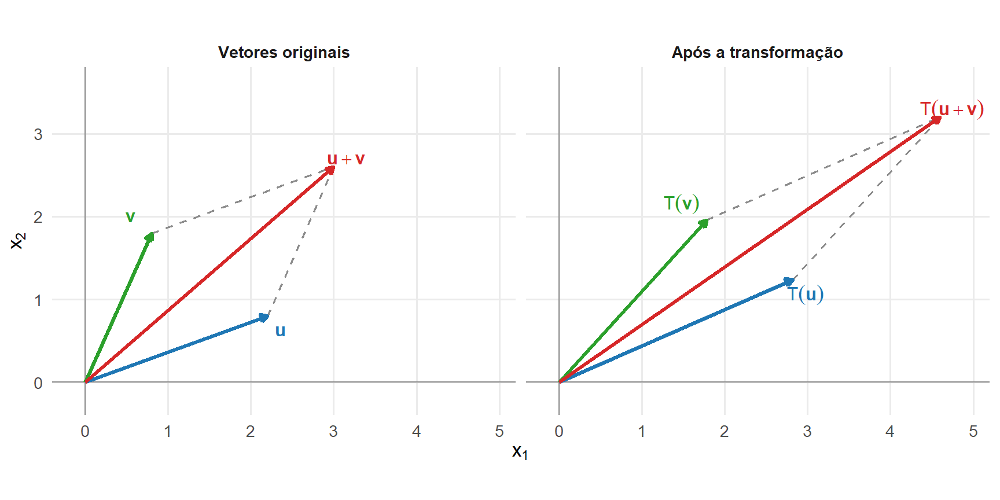
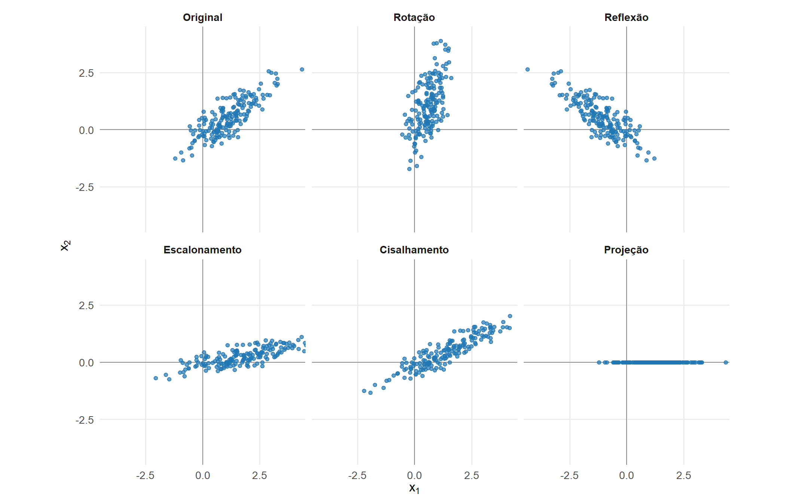
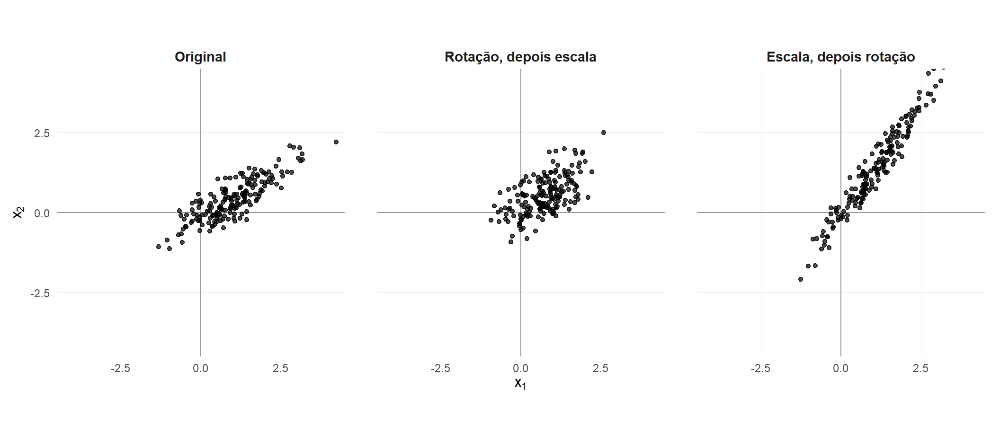
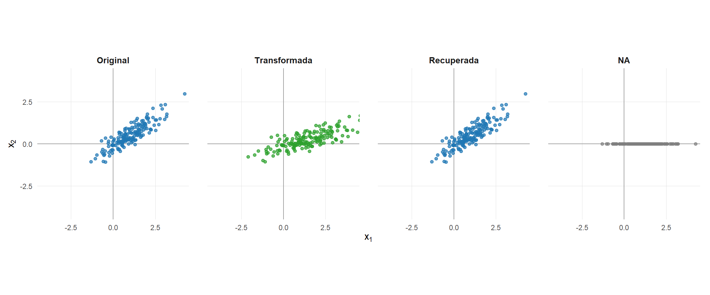
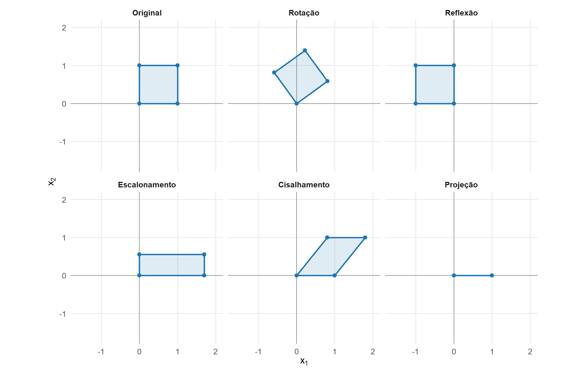
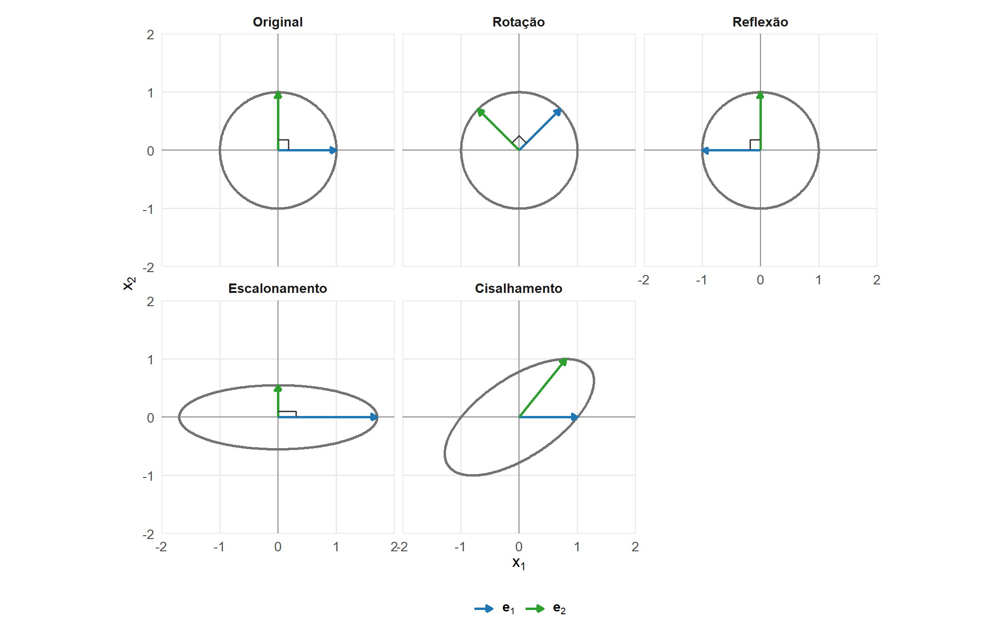
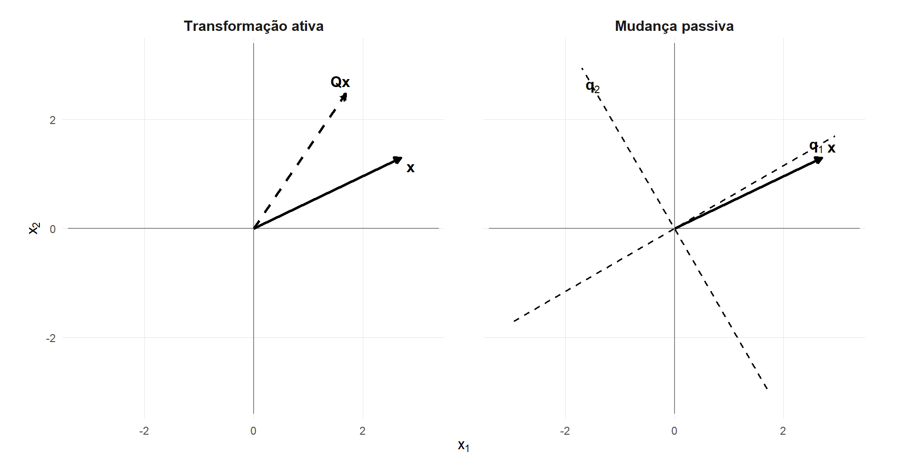
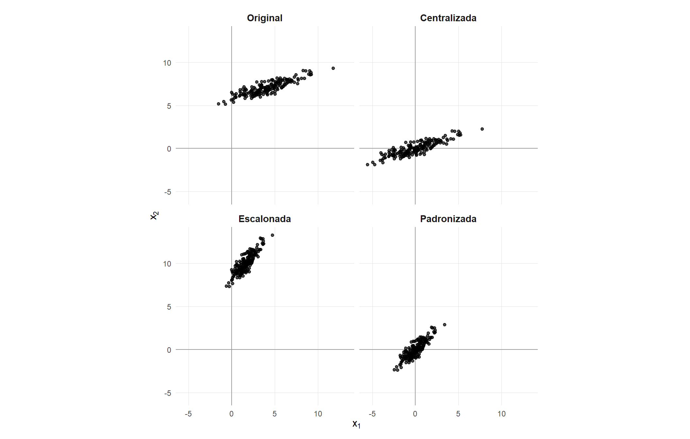

5 Transformações lineares
Os capítulos anteriores apresentaram vetores, matrizes, espaços vetoriais, bases e projeções. Esses objetos permitem representar observações multivariadas e descrever relações lineares entre suas coordenadas.
Uma matriz também pode representar uma aplicação que transforma vetores. Essa aplicação pode alterar a orientação, a escala ou a dimensão da configuração original. Quando preserva combinações lineares, ela é denominada transformação linear.
Este capítulo desenvolve a definição e a representação matricial das transformações lineares, sua aplicação a matrizes de dados, a composição de operações, a invertibilidade e a perda de informação. Também são estudadas transformações geométricas, transformações ortogonais, mudanças de coordenadas e transformações afins utilizadas no pré-processamento de dados.
5.1 Transformações lineares e representação matricial
Uma aplicação entre espaços vetoriais associa a cada vetor do domínio um vetor do contradomínio. A linearidade exige que essa aplicação preserve as operações de adição e multiplicação por escalar.
Definição 5.1 (Transformação linear) Sejam \(V\) e \(W\) espaços vetoriais reais. Uma aplicação
\[ T: V \longrightarrow W \]
é uma transformação linear quando, para quaisquer vetores \(\mathbf{u},\mathbf{v}\in V\) e escalares \(\alpha,\beta\in\mathbb{R}\),
\[ T \left( \alpha\mathbf{u} + \beta\mathbf{v} \right) = \alpha T(\mathbf{u}) + \beta T(\mathbf{v}). \]
Tomando \(\alpha=\beta=1\), obtém-se a preservação da soma:
\[ T(\mathbf{u}+\mathbf{v}) = T(\mathbf{u}) + T(\mathbf{v}). \]
Tomando \(\beta=0\), obtém-se a preservação da multiplicação por escalar:
\[ T(\alpha\mathbf{u}) = \alpha T(\mathbf{u}). \]
Assim, a imagem de uma combinação linear é a combinação linear das imagens:
\[ T \left( \sum_{j=1}^{k} \alpha_j\mathbf{v}_j \right) = \sum_{j=1}^{k} \alpha_jT(\mathbf{v}_j). \]
A Figura 5.1 representa a preservação da soma. O paralelogramo formado pelos vetores originais é transformado em outro paralelogramo cujos lados são as imagens desses vetores.
No primeiro painel, \(\mathbf{u}+\mathbf{v}\) é a diagonal do paralelogramo formado pelos vetores originais. No segundo painel, a relação
\[ T(\mathbf{u}+\mathbf{v}) = T(\mathbf{u}) + T(\mathbf{v}) \]
é preservada.
Teorema 5.1 (Propriedades elementares das transformações lineares) Se
\[ T: V \longrightarrow W \]
é uma transformação linear, então:
- \(T(\mathbf{0})=\mathbf{0}\);
- \(T(-\mathbf{x})=-T(\mathbf{x})\);
- \(T(\mathbf{u}-\mathbf{v}) = T(\mathbf{u})-T(\mathbf{v})\).
Comprovação. Pela homogeneidade,
\[ T(\mathbf{0}) = T(0\mathbf{x}) = 0T(\mathbf{x}) = \mathbf{0}. \]
Também pela homogeneidade,
\[ T(-\mathbf{x}) = T((-1)\mathbf{x}) = -T(\mathbf{x}). \]
Consequentemente,
\[ \begin{aligned} T(\mathbf{u}-\mathbf{v}) &= T(\mathbf{u}+(-\mathbf{v}))\\ &= T(\mathbf{u}) + T(-\mathbf{v})\\ &= T(\mathbf{u}) - T(\mathbf{v}). \end{aligned} \]
A igualdade \(T(\mathbf{0})=\mathbf{0}\) é uma condição necessária para a linearidade. Se uma aplicação não envia o vetor nulo ao vetor nulo, ela não é uma transformação linear.
5.1.1 Transformação determinada por uma base
Uma transformação linear é determinada por sua ação sobre os vetores de uma base do domínio.
Teorema 5.2 (Determinação de uma transformação por uma base) Seja
\[ \mathcal{B} = \{ \mathbf{v}_1,\ldots,\mathbf{v}_p \} \]
uma base de \(V\). Uma transformação linear
\[ T: V \longrightarrow W \]
fica completamente determinada pelos vetores
\[ T(\mathbf{v}_1),\ldots,T(\mathbf{v}_p). \]
Comprovação. Todo vetor \(\mathbf{x}\in V\) possui uma representação única na base \(\mathcal{B}\):
\[ \mathbf{x} = c_1\mathbf{v}_1 + \cdots + c_p\mathbf{v}_p. \]
Pela linearidade,
\[ T(\mathbf{x}) = c_1T(\mathbf{v}_1) + \cdots + c_pT(\mathbf{v}_p). \]
Portanto, conhecidas as imagens dos vetores da base, a imagem de qualquer vetor do domínio pode ser determinada.
Considere uma transformação
\[ T: \mathbb{R}^2 \longrightarrow \mathbb{R}^2 \]
definida sobre os vetores da base canônica por
\[ T(\mathbf{e}_1) = \begin{bmatrix} 2\\ 1 \end{bmatrix} \]
e
\[ T(\mathbf{e}_2) = \begin{bmatrix} -1\\ 3 \end{bmatrix}. \]
Para
\[ \mathbf{x} = \begin{bmatrix} x_1\\ x_2 \end{bmatrix} = x_1\mathbf{e}_1+x_2\mathbf{e}_2, \]
tem-se
\[ \begin{aligned} T(\mathbf{x}) &= x_1T(\mathbf{e}_1) + x_2T(\mathbf{e}_2)\\ &= x_1 \begin{bmatrix} 2\\ 1 \end{bmatrix} + x_2 \begin{bmatrix} -1\\ 3 \end{bmatrix}\\ &= \begin{bmatrix} 2x_1-x_2\\ x_1+3x_2 \end{bmatrix}. \end{aligned} \]
Essa expressão pode ser escrita como
\[ T(\mathbf{x}) = \begin{bmatrix} 2&-1\\ 1&3 \end{bmatrix} \begin{bmatrix} x_1\\ x_2 \end{bmatrix}. \]
As colunas da matriz são as imagens dos vetores da base canônica.
5.1.2 Representação matricial nas bases canônicas
Considere uma transformação linear
\[ T: \mathbb{R}^p \longrightarrow \mathbb{R}^q. \]
Se
\[ \mathcal{E}_p = \{ \mathbf{e}_1,\ldots,\mathbf{e}_p \} \]
é a base canônica de \(\mathbb{R}^p\), defina
\[ \mathbf{a}_j = T(\mathbf{e}_j), \qquad j=1,\ldots,p. \]
Organizando esses vetores nas colunas de uma matriz, obtém-se
\[ \mathbf{A} = \begin{bmatrix} \mathbf{a}_1& \cdots& \mathbf{a}_p \end{bmatrix} \in \mathbb{R}^{q\times p}. \]
Para
\[ \mathbf{x} = x_1\mathbf{e}_1 + \cdots + x_p\mathbf{e}_p, \]
a linearidade fornece
\[ \begin{aligned} T(\mathbf{x}) &= x_1T(\mathbf{e}_1) + \cdots + x_pT(\mathbf{e}_p)\\ &= x_1\mathbf{a}_1 + \cdots + x_p\mathbf{a}_p\\ &= \mathbf{A}\mathbf{x}. \end{aligned} \]
Teorema 5.3 (Representação matricial de uma transformação linear) Toda transformação linear
\[ T: \mathbb{R}^p \longrightarrow \mathbb{R}^q \]
pode ser representada de maneira única por uma matriz
\[ \mathbf{A} \in \mathbb{R}^{q\times p} \]
tal que
\[ T(\mathbf{x}) = \mathbf{A}\mathbf{x} \]
para todo \(\mathbf{x}\in\mathbb{R}^p\).
A \(j\)-ésima coluna de \(\mathbf{A}\) é a imagem do \(j\)-ésimo vetor da base canônica:
\[ \mathbf{a}_j = T(\mathbf{e}_j). \]
Reciprocamente, toda matriz
\[ \mathbf{A} \in \mathbb{R}^{q\times p} \]
define uma transformação linear
\[ T_{\mathbf{A}}: \mathbb{R}^p \longrightarrow \mathbb{R}^q \]
por
\[ T_{\mathbf{A}}(\mathbf{x}) = \mathbf{A}\mathbf{x}. \]
De fato,
\[ \begin{aligned} T_{\mathbf{A}} \left( \alpha\mathbf{u} + \beta\mathbf{v} \right) &= \mathbf{A} \left( \alpha\mathbf{u} + \beta\mathbf{v} \right)\\ &= \alpha\mathbf{A}\mathbf{u} + \beta\mathbf{A}\mathbf{v}\\ &= \alpha T_{\mathbf{A}}(\mathbf{u}) + \beta T_{\mathbf{A}}(\mathbf{v}). \end{aligned} \]
A matriz apresentada nessa representação corresponde às bases canônicas do domínio e do contradomínio. A representação em bases gerais será desenvolvida posteriormente.
5.1.3 Imagem de um subespaço
Considere um subespaço
\[ S = \operatorname{span} \{ \mathbf{v}_1,\ldots,\mathbf{v}_k \} \subseteq V. \]
Todo vetor \(\mathbf{x}\in S\) possui a forma
\[ \mathbf{x} = \alpha_1\mathbf{v}_1 + \cdots + \alpha_k\mathbf{v}_k. \]
Aplicando \(T\),
\[ T(\mathbf{x}) = \alpha_1T(\mathbf{v}_1) + \cdots + \alpha_kT(\mathbf{v}_k). \]
Portanto,
\[ T(S) = \operatorname{span} \{ T(\mathbf{v}_1),\ldots,T(\mathbf{v}_k) \}. \]
A imagem de um subespaço por uma transformação linear também é um subespaço do contradomínio.
A transformação preserva as combinações lineares, mas pode reduzir a dimensão do espaço gerado. Considere
\[ \mathbf{A} = \begin{bmatrix} 1&0\\ 0&0 \end{bmatrix}. \]
Os vetores canônicos \(\mathbf{e}_1\) e \(\mathbf{e}_2\) são linearmente independentes, mas
\[ \mathbf{A}\mathbf{e}_1 = \begin{bmatrix} 1\\ 0 \end{bmatrix} \]
e
\[ \mathbf{A}\mathbf{e}_2 = \begin{bmatrix} 0\\ 0 \end{bmatrix}. \]
A segunda direção é eliminada e a imagem da transformação possui dimensão 1. A relação entre preservação da independência linear, núcleo, posto e injetividade será desenvolvida na seção sobre invertibilidade e perda de informação.
5.2 Transformação de vetores e matrizes de dados
A representação
\[ T(\mathbf{x}) = \mathbf{A}\mathbf{x} \]
considera cada observação como um vetor-coluna. Em uma matriz de dados, as observações são organizadas nas linhas. A aplicação simultânea da transformação exige, portanto, a transposição da matriz que atua sobre cada vetor.
Considere
\[ \mathbf{X} = \begin{bmatrix} \mathbf{x}_1^{\top}\\ \mathbf{x}_2^{\top}\\ \vdots\\ \mathbf{x}_n^{\top} \end{bmatrix} \in \mathbb{R}^{n\times p}, \]
em que
\[ \mathbf{x}_i \in \mathbb{R}^p, \qquad i=1,\ldots,n, \]
representa a \(i\)-ésima observação.
Se
\[ T: \mathbb{R}^p \longrightarrow \mathbb{R}^q \]
é representada por
\[ \mathbf{A} \in \mathbb{R}^{q\times p}, \]
a imagem de cada observação é
\[ \mathbf{y}_i = \mathbf{A}\mathbf{x}_i \in \mathbb{R}^q. \]
Transpondo essa igualdade,
\[ \mathbf{y}_i^{\top} = \mathbf{x}_i^{\top}\mathbf{A}^{\top}. \]
Teorema 5.4 (Transformação de uma matriz de dados) Se as observações estão organizadas nas linhas de
\[ \mathbf{X} \in \mathbb{R}^{n\times p} \]
e cada observação é transformada por
\[ \mathbf{y}_i = \mathbf{A}\mathbf{x}_i, \qquad \mathbf{A} \in \mathbb{R}^{q\times p}, \]
então a matriz transformada é
\[ \mathbf{Y} = \mathbf{X}\mathbf{A}^{\top} \in \mathbb{R}^{n\times q}. \]
Comprovação. A \(i\)-ésima linha de \(\mathbf{Y}\) é
\[ \mathbf{x}_i^{\top}\mathbf{A}^{\top}. \]
Como
\[ \mathbf{x}_i^{\top}\mathbf{A}^{\top} = \left( \mathbf{A}\mathbf{x}_i \right)^{\top} = \mathbf{y}_i^{\top}, \]
tem-se
\[ \mathbf{Y} = \begin{bmatrix} \mathbf{y}_1^{\top}\\ \mathbf{y}_2^{\top}\\ \vdots\\ \mathbf{y}_n^{\top} \end{bmatrix} = \mathbf{X}\mathbf{A}^{\top}. \]
As dimensões da multiplicação são
\[ \underbrace{\mathbf{X}}_{n\times p} \underbrace{\mathbf{A}^{\top}}_{p\times q} = \underbrace{\mathbf{Y}}_{n\times q}. \]
A transposição não altera a transformação definida sobre vetores-coluna. Ela adapta a multiplicação à organização das observações nas linhas da matriz de dados.
Em R, essa operação pode ser realizada por:
Y <- X %*% t(A)5.2.1 Novas variáveis como combinações lineares
Seja
\[ \mathbf{w}_j \in \mathbb{R}^p \]
o vetor de coeficientes associado à \(j\)-ésima coordenada transformada. As linhas de \(\mathbf{A}\) podem ser representadas por
\[ \mathbf{A} = \begin{bmatrix} \mathbf{w}_1^{\top}\\ \mathbf{w}_2^{\top}\\ \vdots\\ \mathbf{w}_q^{\top} \end{bmatrix}, \]
de modo que
\[ \mathbf{A}^{\top} = \begin{bmatrix} \mathbf{w}_1& \mathbf{w}_2& \cdots& \mathbf{w}_q \end{bmatrix}. \]
Consequentemente,
\[ \mathbf{Y} = \begin{bmatrix} \mathbf{X}\mathbf{w}_1& \mathbf{X}\mathbf{w}_2& \cdots& \mathbf{X}\mathbf{w}_q \end{bmatrix}. \]
A \(j\)-ésima coluna da matriz transformada é
\[ \mathbf{y}^{(j)} = \mathbf{X}\mathbf{w}_j. \]
Cada nova variável é, portanto, uma combinação linear das variáveis originais. Para a \(i\)-ésima observação,
\[ y_{ij} = a_{j1}x_{i1} + a_{j2}x_{i2} + \cdots + a_{jp}x_{ip}. \]
Essa relação permite interpretar a transformação de duas maneiras complementares:
- cada linha de \(\mathbf{Y}\) é a imagem de uma observação;
- cada coluna de \(\mathbf{Y}\) é uma nova variável construída por combinação linear.
Exemplo 5.1 (Transformação de um conjunto de observações) Considere
\[ \mathbf{X} = \begin{bmatrix} 1&2\\ 3&1\\ 2&4 \end{bmatrix} \]
e
\[ \mathbf{A} = \begin{bmatrix} 1&1\\ 2&-1 \end{bmatrix}. \]
Para uma observação genérica,
\[ \mathbf{x}_i = \begin{bmatrix} x_{i1}\\ x_{i2} \end{bmatrix}, \]
tem-se
\[ \begin{aligned} \mathbf{y}_i &= \mathbf{A}\mathbf{x}_i\\ &= \begin{bmatrix} 1&1\\ 2&-1 \end{bmatrix} \begin{bmatrix} x_{i1}\\ x_{i2} \end{bmatrix}\\ &= \begin{bmatrix} x_{i1}+x_{i2}\\ 2x_{i1}-x_{i2} \end{bmatrix}. \end{aligned} \]
Como as observações estão nas linhas de \(\mathbf{X}\),
\[ \begin{aligned} \mathbf{Y} &= \mathbf{X}\mathbf{A}^{\top}\\ &= \begin{bmatrix} 1&2\\ 3&1\\ 2&4 \end{bmatrix} \begin{bmatrix} 1&2\\ 1&-1 \end{bmatrix}\\ &= \begin{bmatrix} 3&0\\ 4&5\\ 6&0 \end{bmatrix}. \end{aligned} \]
A primeira variável transformada é a soma das duas variáveis originais:
\[ \mathbf{y}^{(1)} = \mathbf{x}^{(1)} + \mathbf{x}^{(2)}. \]
A segunda é
\[ \mathbf{y}^{(2)} = 2\mathbf{x}^{(1)} - \mathbf{x}^{(2)}. \]
5.2.2 Dimensão da configuração transformada
Quando
\[ q=p, \]
a transformação atua entre espaços de mesma dimensão:
\[ T: \mathbb{R}^p \longrightarrow \mathbb{R}^p. \]
e o domínio e o contradomínio possuem a mesma dimensão. A dimensão efetiva da imagem, entretanto, pode ser menor que \(p\) quando \(\mathbf{A}\) não possui posto completo.
Quando
\[ q<p, \]
a transformação produz vetores com menos coordenadas:
\[ T: \mathbb{R}^p \longrightarrow \mathbb{R}^q. \]
Quando
\[ q>p, \]
os vetores passam a ser representados em um espaço com mais coordenadas. Esse aumento do contradomínio não implica aumento da dimensão efetiva da imagem.
Se
\[ \operatorname{posto}(\mathbf{A}) = r, \]
então
\[ \mathcal{C}(\mathbf{A}) \subseteq \mathbb{R}^q \]
possui dimensão \(r\). Como
\[ \mathbf{y}_i = \mathbf{A}\mathbf{x}_i, \]
todas as observações transformadas pertencem a esse espaço:
\[ \mathbf{y}_i \in \mathcal{C}(\mathbf{A}). \]
Portanto, a configuração transformada está contida em um subespaço de dimensão
\[ r = \operatorname{posto}(\mathbf{A}). \]
Se
\[ r=q, \]
a imagem coincide com todo o contradomínio.
Se
\[ r<q, \]
a imagem ocupa apenas um subespaço próprio de \(\mathbb{R}^q\).
Quando
\[ r<p, \]
a transformação elimina pelo menos uma direção do domínio. Existe, nesse caso, um vetor não nulo
\[ \mathbf{v} \in \mathcal{N}(\mathbf{A}) \]
tal que
\[ \mathbf{A}\mathbf{v} = \mathbf{0}. \]
Para qualquer \(\mathbf{x}\in\mathbb{R}^p\),
\[ \begin{aligned} \mathbf{A} \left( \mathbf{x}+\mathbf{v} \right) &= \mathbf{A}\mathbf{x} + \mathbf{A}\mathbf{v}\\ &= \mathbf{A}\mathbf{x}. \end{aligned} \]
Vetores distintos podem, portanto, produzir a mesma imagem quando diferem por um elemento do espaço nulo.
A Figura 5.2 compara os efeitos de diferentes matrizes sobre uma mesma configuração de pontos.

A rotação gira a configuração em relação aos eixos coordenados sem alterar sua forma. A reflexão também preserva a forma, mas inverte sua orientação. O escalonamento modifica os comprimentos em cada direção, enquanto o cisalhamento altera uma coordenada de acordo com a outra. A projeção elimina a segunda coordenada e reduz a configuração a uma reta.
As cinco operações preservam combinações lineares. Entretanto, não preservam necessariamente comprimentos, ângulos, áreas ou dimensão.
5.2.3 Efeito sobre diferenças e produtos internos
Se duas observações são representadas por \(\mathbf{x}_i\) e \(\mathbf{x}_j\), então
\[ \begin{aligned} \mathbf{y}_i-\mathbf{y}_j &= \mathbf{A}\mathbf{x}_i - \mathbf{A}\mathbf{x}_j\\ &= \mathbf{A} \left( \mathbf{x}_i-\mathbf{x}_j \right). \end{aligned} \]
A transformação das diferenças determina o efeito sobre as distâncias. O quadrado da distância entre as imagens é
\[ \begin{aligned} \| \mathbf{y}_i-\mathbf{y}_j \|^2 &= \left[ \mathbf{A} \left( \mathbf{x}_i-\mathbf{x}_j \right) \right]^{\top} \left[ \mathbf{A} \left( \mathbf{x}_i-\mathbf{x}_j \right) \right]\\ &= \left( \mathbf{x}_i-\mathbf{x}_j \right)^{\top} \mathbf{A}^{\top}\mathbf{A} \left( \mathbf{x}_i-\mathbf{x}_j \right). \end{aligned} \]
A matriz
\[ \mathbf{A}^{\top}\mathbf{A} \]
descreve, no domínio, a geometria induzida pela transformação.
Para quaisquer vetores \(\mathbf{x},\mathbf{z}\in\mathbb{R}^p\),
\[ \begin{aligned} T(\mathbf{x})^{\top}T(\mathbf{z}) &= (\mathbf{A}\mathbf{x})^{\top} (\mathbf{A}\mathbf{z})\\ &= \mathbf{x}^{\top} \mathbf{A}^{\top}\mathbf{A} \mathbf{z}. \end{aligned} \]
Em particular,
\[ \| \mathbf{A}\mathbf{x} \|^2 = \mathbf{x}^{\top} \mathbf{A}^{\top}\mathbf{A} \mathbf{x}. \]
Como
\[ \mathbf{x}^{\top} \mathbf{A}^{\top}\mathbf{A} \mathbf{x} = \| \mathbf{A}\mathbf{x} \|^2 \geq 0, \]
a matriz \(\mathbf{A}^{\top}\mathbf{A}\) é simétrica e semidefinida positiva.
Se \(\mathbf{A}\) possui posto completo nas colunas, então
\[ \mathcal{N}(\mathbf{A}) = \{\mathbf{0}\} \]
e
\[ \mathbf{x}^{\top} \mathbf{A}^{\top}\mathbf{A} \mathbf{x} > 0 \]
para todo \(\mathbf{x}\neq\mathbf{0}\). Nesse caso,
\[ \mathbf{A}^{\top}\mathbf{A} \succ 0, \]
e a expressão
\[ \|\mathbf{x}\|_{\mathbf{A}} = \sqrt{ \mathbf{x}^{\top} \mathbf{A}^{\top}\mathbf{A} \mathbf{x} } = \|\mathbf{A}\mathbf{x}\| \]
define uma norma em \(\mathbb{R}^p\).
Quando \(\mathbf{A}\) não possui posto completo nas colunas, existem vetores não nulos em \(\mathcal{N}(\mathbf{A})\) para os quais
\[ \|\mathbf{x}\|_{\mathbf{A}} = 0. \]
Nesse caso, \(\|\cdot\|_{\mathbf{A}}\) define uma seminorma.
5.2.4 Transformação das matrizes de produtos internos
A matriz de Gram entre as observações originais é
\[ \mathbf{G}_{\mathbf{X}} = \mathbf{X}\mathbf{X}^{\top}. \]
Para
\[ \mathbf{Y} = \mathbf{X}\mathbf{A}^{\top}, \]
tem-se
\[ \begin{aligned} \mathbf{G}_{\mathbf{Y}} &= \mathbf{Y}\mathbf{Y}^{\top}\\ &= \mathbf{X} \mathbf{A}^{\top} \mathbf{A} \mathbf{X}^{\top}. \end{aligned} \]
Portanto,
\[ \mathbf{G}_{\mathbf{Y}} = \mathbf{X} \mathbf{A}^{\top} \mathbf{A} \mathbf{X}^{\top}. \]
Se
\[ \mathbf{A}^{\top}\mathbf{A} = \mathbf{I}_p, \]
então
\[ \mathbf{G}_{\mathbf{Y}} = \mathbf{X}\mathbf{X}^{\top} = \mathbf{G}_{\mathbf{X}}. \]
Nesse caso, todos os produtos internos entre as observações são preservados.
A matriz de produtos cruzados entre as variáveis transformadas é
\[ \begin{aligned} \mathbf{Y}^{\top}\mathbf{Y} &= \left( \mathbf{X}\mathbf{A}^{\top} \right)^{\top} \left( \mathbf{X}\mathbf{A}^{\top} \right)\\ &= \mathbf{A} \mathbf{X}^{\top}\mathbf{X} \mathbf{A}^{\top}. \end{aligned} \]
Logo,
\[ \mathbf{Y}^{\top}\mathbf{Y} = \mathbf{A} \mathbf{X}^{\top}\mathbf{X} \mathbf{A}^{\top}. \]
Essa expressão descreve como os produtos cruzados entre as novas variáveis são obtidos a partir dos produtos cruzados entre as variáveis originais.
Quando \(\mathbf{X}\) está centralizada, a mesma estrutura permite descrever posteriormente a transformação da matriz de covariâncias. Por enquanto, a relação mostra que uma transformação linear modifica simultaneamente a geometria das observações e as relações entre as variáveis.
5.3 Composição, invertibilidade e perda de informação
Transformações lineares podem ser aplicadas sucessivamente. A matriz da transformação resultante é obtida pelo produto das matrizes que representam cada etapa.
5.3.1 Composição de transformações lineares
Considere
\[ T_1: \mathbb{R}^p \longrightarrow \mathbb{R}^q \]
e
\[ T_2: \mathbb{R}^q \longrightarrow \mathbb{R}^r, \]
representadas, respectivamente, por
\[ \mathbf{A} \in \mathbb{R}^{q\times p} \]
e
\[ \mathbf{B} \in \mathbb{R}^{r\times q}. \]
Para \(\mathbf{x}\in\mathbb{R}^p\),
\[ T_1(\mathbf{x}) = \mathbf{A}\mathbf{x}. \]
Aplicando \(T_2\) à imagem produzida por \(T_1\),
\[ \begin{aligned} T_2 \left( T_1(\mathbf{x}) \right) &= \mathbf{B} \left( \mathbf{A}\mathbf{x} \right)\\ &= \left( \mathbf{B}\mathbf{A} \right) \mathbf{x}. \end{aligned} \]
Teorema 5.5 (Matriz de uma composição) Se \(T_1\) é representada por \(\mathbf{A}\) e \(T_2\) é representada por \(\mathbf{B}\), então a composição
\[ T_2\circ T_1 \]
é representada por
\[ \mathbf{B}\mathbf{A}. \]
Em particular,
\[ [T_2\circ T_1] = [T_2][T_1]. \]
A ordem do produto é interpretada da direita para a esquerda:
- \(\mathbf{A}\) atua primeiro;
- \(\mathbf{B}\) atua depois.
As dimensões refletem essa sequência:
\[ \underbrace{\mathbf{B}}_{r\times q} \underbrace{\mathbf{A}}_{q\times p} \underbrace{\mathbf{x}}_{p\times1} \in \mathbb{R}^r. \]
Se as observações estão nas linhas de
\[ \mathbf{X} \in \mathbb{R}^{n\times p}, \]
a primeira transformação produz
\[ \mathbf{Y} = \mathbf{X}\mathbf{A}^{\top}. \]
A segunda produz
\[ \begin{aligned} \mathbf{Z} &= \mathbf{Y}\mathbf{B}^{\top}\\ &= \mathbf{X} \mathbf{A}^{\top} \mathbf{B}^{\top}\\ &= \mathbf{X} \left( \mathbf{B}\mathbf{A} \right)^{\top}. \end{aligned} \]
Portanto, a composição aplicada à matriz de dados é
\[ \mathbf{Z} = \mathbf{X} \left( \mathbf{B}\mathbf{A} \right)^{\top}. \]
5.3.2 A ordem das transformações
Em geral,
\[ \mathbf{B}\mathbf{A} \neq \mathbf{A}\mathbf{B}. \]
Consequentemente,
\[ T_2\circ T_1 \neq T_1\circ T_2. \]
Exemplo 5.2 (Composição de rotação e escalonamento) Considere uma rotação de \(45^\circ\),
\[ \mathbf{Q}\left(\frac{\pi}{4}\right) = \begin{bmatrix} \cos(\pi/4)&-\sin(\pi/4)\\ \sin(\pi/4)&\cos(\pi/4) \end{bmatrix}, \]
e um escalonamento não uniforme,
\[ \mathbf{L} = \begin{bmatrix} 2&0\\ 0&1 \end{bmatrix}. \]
Aplicar primeiro a rotação e depois o escalonamento corresponde a
\[ \mathbf{L} \mathbf{Q}\left(\frac{\pi}{4}\right). \]
Aplicar primeiro o escalonamento e depois a rotação corresponde a
\[ \mathbf{Q}\left(\frac{\pi}{4}\right) \mathbf{L}. \]
Como
\[ \mathbf{L} \mathbf{Q}\left(\frac{\pi}{4}\right) \neq \mathbf{Q}\left(\frac{\pi}{4}\right) \mathbf{L}, \]
as duas sequências produzem transformações diferentes.
A Figura 5.3 compara as duas ordens de aplicação.

As duas composições utilizam as mesmas transformações, mas produzem configurações diferentes. Na primeira, a nuvem é rotacionada antes de ser escalonada em relação aos eixos coordenados. Na segunda, o escalonamento ocorre antes da mudança de orientação.
5.3.3 Transformação inversa
Uma transformação linear invertível permite recuperar de maneira única o vetor original a partir de sua imagem.
Definição 5.2 (Transformação inversa) Uma transformação linear
\[ T: V \longrightarrow W \]
é invertível quando existe uma transformação
\[ T^{-1}: W \longrightarrow V \]
tal que
\[ T^{-1} \left( T(\mathbf{x}) \right) = \mathbf{x} \]
para todo \(\mathbf{x}\in V\) e
\[ T \left( T^{-1}(\mathbf{y}) \right) = \mathbf{y} \]
para todo \(\mathbf{y}\in W\).
Considere uma transformação
\[ T: \mathbb{R}^p \longrightarrow \mathbb{R}^p \]
representada por uma matriz quadrada e invertível
\[ \mathbf{A} \in \mathbb{R}^{p\times p}. \]
Se
\[ \mathbf{y} = \mathbf{A}\mathbf{x}, \]
então
\[ \mathbf{x} = \mathbf{A}^{-1}\mathbf{y}. \]
A transformação inversa é representada por \(\mathbf{A}^{-1}\).
Teorema 5.6 (Inversa de uma composição) Se \(\mathbf{A}\) e \(\mathbf{B}\) são matrizes quadradas e invertíveis de dimensões compatíveis, então
\[ \left( \mathbf{B}\mathbf{A} \right)^{-1} = \mathbf{A}^{-1} \mathbf{B}^{-1}. \]
Comprovação. Tem-se
\[ \begin{aligned} \left( \mathbf{B}\mathbf{A} \right) \left( \mathbf{A}^{-1}\mathbf{B}^{-1} \right) &= \mathbf{B} \left( \mathbf{A}\mathbf{A}^{-1} \right) \mathbf{B}^{-1}\\ &= \mathbf{B}\mathbf{B}^{-1}\\ &= \mathbf{I}. \end{aligned} \]
De forma análoga,
\[ \begin{aligned} \left( \mathbf{A}^{-1}\mathbf{B}^{-1} \right) \left( \mathbf{B}\mathbf{A} \right) &= \mathbf{A}^{-1} \left( \mathbf{B}^{-1}\mathbf{B} \right) \mathbf{A}\\ &= \mathbf{A}^{-1}\mathbf{A}\\ &= \mathbf{I}. \end{aligned} \]
Logo,
\[ \left( \mathbf{B}\mathbf{A} \right)^{-1} = \mathbf{A}^{-1} \mathbf{B}^{-1}. \]
A ordem é invertida porque a última transformação aplicada deve ser a primeira a ser desfeita.
5.3.4 Injetividade, sobrejetividade e bijetividade
As propriedades de injetividade e sobrejetividade descrevem, respectivamente, a possibilidade de distinguir vetores do domínio por suas imagens e a possibilidade de atingir todos os vetores do contradomínio.
Definição 5.3 (Injetividade, sobrejetividade e bijetividade) Uma transformação
\[ T: V \longrightarrow W \]
é:
injetiva quando
\[ T(\mathbf{x}_1) = T(\mathbf{x}_2) \quad\Longrightarrow\quad \mathbf{x}_1 = \mathbf{x}_2; \]
sobrejetiva quando, para todo \(\mathbf{y}\in W\), existe pelo menos um \(\mathbf{x}\in V\) tal que
\[ T(\mathbf{x}) = \mathbf{y}; \]
bijetiva quando é simultaneamente injetiva e sobrejetiva.
Para uma transformação matricial
\[ T_{\mathbf{A}}: \mathbb{R}^p \longrightarrow \mathbb{R}^q, \qquad T_{\mathbf{A}}(\mathbf{x}) = \mathbf{A}\mathbf{x}, \]
essas propriedades podem ser caracterizadas pelo núcleo, pelo espaço coluna e pelo posto.
Teorema 5.7 (Caracterizações por núcleo, imagem e posto) Se
\[ \mathbf{A} \in \mathbb{R}^{q\times p}, \]
então:
\(T_{\mathbf{A}}\) é injetiva se, e somente se,
\[ \mathcal{N}(\mathbf{A}) = \{\mathbf{0}\}; \]
\(T_{\mathbf{A}}\) é injetiva se, e somente se,
\[ \operatorname{posto}(\mathbf{A}) = p; \]
\(T_{\mathbf{A}}\) é sobrejetiva se, e somente se,
\[ \mathcal{C}(\mathbf{A}) = \mathbb{R}^q; \]
\(T_{\mathbf{A}}\) é sobrejetiva se, e somente se,
\[ \operatorname{posto}(\mathbf{A}) = q. \]
Comprovação. Suponha que \(T_{\mathbf{A}}\) seja injetiva. Se
\[ \mathbf{x} \in \mathcal{N}(\mathbf{A}), \]
então
\[ \mathbf{A}\mathbf{x} = \mathbf{0} = \mathbf{A}\mathbf{0}. \]
Pela injetividade,
\[ \mathbf{x} = \mathbf{0}. \]
Logo,
\[ \mathcal{N}(\mathbf{A}) = \{\mathbf{0}\}. \]
Reciprocamente, suponha que
\[ \mathcal{N}(\mathbf{A}) = \{\mathbf{0}\} \]
e que
\[ \mathbf{A}\mathbf{x}_1 = \mathbf{A}\mathbf{x}_2. \]
Então,
\[ \mathbf{A} \left( \mathbf{x}_1-\mathbf{x}_2 \right) = \mathbf{0}. \]
Portanto,
\[ \mathbf{x}_1-\mathbf{x}_2 \in \mathcal{N}(\mathbf{A}), \]
o que implica
\[ \mathbf{x}_1 = \mathbf{x}_2. \]
Assim, \(T_{\mathbf{A}}\) é injetiva.
Pelo Teorema 4.11,
\[ \dim \left( \mathcal{N}(\mathbf{A}) \right) + \operatorname{posto}(\mathbf{A}) = p. \]
Logo,
\[ \mathcal{N}(\mathbf{A}) = \{\mathbf{0}\} \]
se, e somente se,
\[ \operatorname{posto}(\mathbf{A}) = p. \]
A transformação é sobrejetiva quando todo vetor de \(\mathbb{R}^q\) pertence à imagem de \(T_{\mathbf{A}}\). Como essa imagem é \(\mathcal{C}(\mathbf{A})\), a sobrejetividade equivale a
\[ \mathcal{C}(\mathbf{A}) = \mathbb{R}^q. \]
Essa igualdade ocorre se, e somente se,
\[ \dim \left( \mathcal{C}(\mathbf{A}) \right) = q, \]
isto é,
\[ \operatorname{posto}(\mathbf{A}) = q. \]
Uma transformação de \(\mathbb{R}^p\) em \(\mathbb{R}^q\) pode ser injetiva somente quando
\[ q \geq p. \]
De forma análoga, pode ser sobrejetiva somente quando
\[ p \geq q. \]
Se a transformação é bijetiva, então
\[ p=q \]
e
\[ \operatorname{posto}(\mathbf{A}) = p. \]
Combinando o Teorema 5.7 com o Teorema 3.7, obtém-se o resultado seguinte.
Teorema 5.8 (Equivalências para uma transformação quadrada) Considere
\[ \mathbf{A} \in \mathbb{R}^{p\times p} \]
e a transformação linear
\[ T_{\mathbf{A}}: \mathbb{R}^p \longrightarrow \mathbb{R}^p, \qquad T_{\mathbf{A}}(\mathbf{x}) = \mathbf{A}\mathbf{x}. \]
São equivalentes:
- \(T_{\mathbf{A}}\) é injetiva;
- \(T_{\mathbf{A}}\) é sobrejetiva;
- \(T_{\mathbf{A}}\) é bijetiva;
- \(\mathcal{N}(\mathbf{A})=\{\mathbf{0}\}\);
- \(\mathcal{C}(\mathbf{A})=\mathbb{R}^p\);
- \(\operatorname{posto}(\mathbf{A})=p\);
- \(\det(\mathbf{A})\neq0\);
- \(\mathbf{A}^{-1}\) existe.
A Tabela 5.1 resume as relações principais.
| Propriedade | Condição geométrica | Condição matricial |
|---|---|---|
| Injetividade | Vetores distintos possuem imagens distintas | \(\mathcal{N}(\mathbf{A})=\{\mathbf{0}\}\) e \(\operatorname{posto}(\mathbf{A})=p\) |
| Sobrejetividade | Todo vetor do contradomínio é atingido | \(\mathcal{C}(\mathbf{A})=\mathbb{R}^q\) e \(\operatorname{posto}(\mathbf{A})=q\) |
| Bijetividade | Há correspondência única entre domínio e contradomínio | \(p=q=\operatorname{posto}(\mathbf{A})\) |
| Invertibilidade | A transformação pode ser desfeita | \(\mathbf{A}\) é quadrada e \(\det(\mathbf{A})\neq0\) |
5.3.5 Perda de informação
Quando a transformação não é injetiva, existem vetores distintos com a mesma imagem.
Se
\[ \mathbf{v} \in \mathcal{N}(\mathbf{A}), \]
então, para qualquer \(\mathbf{x}\in\mathbb{R}^p\),
\[ \begin{aligned} \mathbf{A} \left( \mathbf{x}+\mathbf{v} \right) &= \mathbf{A}\mathbf{x} + \mathbf{A}\mathbf{v}\\ &= \mathbf{A}\mathbf{x}. \end{aligned} \]
Portanto, todos os vetores do conjunto
\[ \mathbf{x} + \mathcal{N}(\mathbf{A}) = \left\{ \mathbf{x}+\mathbf{v}: \mathbf{v}\in\mathcal{N}(\mathbf{A}) \right\} \]
produzem a mesma imagem.
Reciprocamente, se
\[ \mathbf{A}\mathbf{x}_1 = \mathbf{A}\mathbf{x}_2, \]
então
\[ \mathbf{x}_1-\mathbf{x}_2 \in \mathcal{N}(\mathbf{A}). \]
A ambiguidade na recuperação do vetor original é, assim, determinada pelo espaço nulo.
Se
\[ \operatorname{posto}(\mathbf{A}) = r, \]
o Teorema Posto–Nulidade fornece
\[ \dim \left( \mathcal{N}(\mathbf{A}) \right) = p-r. \]
A transformação elimina \(p-r\) direções independentes e produz uma imagem de dimensão \(r\).
5.3.6 Redução de dimensionalidade
Considere
\[ \mathbf{A} \in \mathbb{R}^{q\times p} \]
com
\[ q<p. \]
Mesmo que
\[ \operatorname{posto}(\mathbf{A}) = q, \]
tem-se
\[ \dim \left( \mathcal{N}(\mathbf{A}) \right) = p-q > 0. \]
A perda de informação é inevitável quando a transformação é considerada sobre todo o espaço \(\mathbb{R}^p\). Entretanto, sua restrição a um conjunto particular ou a um subespaço de dimensão menor ou igual a \(q\) pode ser injetiva. Assim, reduzir o número de coordenadas não implica necessariamente identificar observações distintas no conjunto de dados efetivamente analisado.
A redução pode ser útil quando a matriz é escolhida para preservar determinadas direções e eliminar outras. O critério utilizado para selecionar essas direções será desenvolvido posteriormente, no contexto das técnicas multivariadas.
5.3.7 Transformações singulares
Uma matriz quadrada é singular quando
\[ \det(\mathbf{A}) = 0. \]
Nesse caso,
\[ \operatorname{posto}(\mathbf{A}) < p, \]
e a transformação leva \(\mathbb{R}^p\) a um subespaço de menor dimensão.
Por exemplo,
\[ \mathbf{A} = \begin{bmatrix} 1&0\\ 0&0 \end{bmatrix} \]
transforma
\[ \begin{bmatrix} x_1\\ x_2 \end{bmatrix} \]
em
\[ \begin{bmatrix} x_1\\ 0 \end{bmatrix}. \]
Todos os pontos com a mesma primeira coordenada produzem a mesma imagem.
A Figura 5.4 compara uma transformação invertível, a recuperação pela inversa e uma transformação singular.

A transformação representada por \(\mathbf{A}\) modifica a configuração, mas mantém uma correspondência única entre os pontos originais e transformados. A aplicação de \(\mathbf{A}^{-1}\) recupera a configuração inicial. A transformação singular elimina a segunda coordenada e reduz toda a nuvem a uma reta.
Para
\[ T_{\mathbf{A}}: \mathbb{R}^p \longrightarrow \mathbb{R}^q, \]
as possibilidades podem ser resumidas da seguinte forma:
- se \(q<p\), a transformação não pode ser injetiva;
- se \(q>p\), a transformação não pode ser sobrejetiva;
- se \(q=p\), ela é bijetiva quando \(\operatorname{posto}(\mathbf{A})=p\);
- se \(\operatorname{posto}(\mathbf{A})<\min(p,q)\), ela não é injetiva nem sobrejetiva.
Essas relações permitem interpretar o posto como o número de direções independentes preservadas na imagem. A seção seguinte examina os efeitos geométricos produzidos por classes particulares de matrizes.
5.4 Transformações geométricas
Matrizes distintas produzem efeitos geométricos diferentes sobre vetores e conjuntos de pontos. Algumas modificam apenas a orientação da configuração, enquanto outras alteram comprimentos, ângulos, áreas ou dimensão.
Nesta seção, são examinadas cinco transformações no plano:
- rotação;
- reflexão;
- escalonamento;
- cisalhamento;
- projeção.
Todas preservam combinações lineares e, portanto, são transformações lineares. As propriedades geométricas preservadas dependem da matriz utilizada.
5.4.1 Rotação
Uma rotação de ângulo \(\theta\) em torno da origem é representada por
\[ \mathbf{Q}(\theta) = \begin{bmatrix} \cos\theta&-\sin\theta\\ \sin\theta&\cos\theta \end{bmatrix}. \]
Para
\[ \mathbf{x} = \begin{bmatrix} x_1\\ x_2 \end{bmatrix}, \]
a imagem é
\[ \mathbf{y} = \mathbf{Q}(\theta)\mathbf{x}, \]
isto é,
\[ \begin{aligned} y_1 &= x_1\cos\theta - x_2\sin\theta,\\ y_2 &= x_1\sin\theta + x_2\cos\theta. \end{aligned} \]
A matriz de rotação satisfaz
\[ \mathbf{Q}(\theta)^{\top} \mathbf{Q}(\theta) = \mathbf{I}_2. \]
Consequentemente,
\[ \mathbf{Q}(\theta)^{-1} = \mathbf{Q}(\theta)^{\top} = \mathbf{Q}(-\theta). \]
A transformação inversa corresponde a uma rotação pelo mesmo ângulo no sentido oposto.
Além disso,
\[ \det \left( \mathbf{Q}(\theta) \right) = 1. \]
A rotação preserva comprimentos, distâncias, ângulos, áreas e orientação.
5.4.2 Reflexão
Uma reflexão no plano produz a imagem especular dos vetores em relação a uma reta que passa pela origem.
A reflexão em relação ao eixo horizontal é representada por
\[ \mathbf{F}_1 = \begin{bmatrix} 1&0\\ 0&-1 \end{bmatrix}, \]
de modo que
\[ \begin{bmatrix} x_1\\ x_2 \end{bmatrix} \longmapsto \begin{bmatrix} x_1\\ -x_2 \end{bmatrix}. \]
A reflexão em relação ao eixo vertical é representada por
\[ \mathbf{F}_2 = \begin{bmatrix} -1&0\\ 0&1 \end{bmatrix}, \]
e produz
\[ \begin{bmatrix} x_1\\ x_2 \end{bmatrix} \longmapsto \begin{bmatrix} -x_1\\ x_2 \end{bmatrix}. \]
As duas matrizes satisfazem
\[ \mathbf{F}^{\top}\mathbf{F} = \mathbf{I}_2 \]
e
\[ \mathbf{F}^{-1} = \mathbf{F}. \]
Assim,
\[ \mathbf{F}^2 = \mathbf{I}_2. \]
Aplicar duas vezes a mesma reflexão recupera o vetor original.
Considere agora uma reta gerada por um vetor unitário
\[ \mathbf{u} \in \mathbb{R}^2, \qquad \|\mathbf{u}\| = 1. \]
A projeção de \(\mathbf{x}\) sobre essa reta é
\[ \mathbf{u}\mathbf{u}^{\top}\mathbf{x}, \]
enquanto sua componente ortogonal é
\[ \left( \mathbf{I}_2 - \mathbf{u}\mathbf{u}^{\top} \right) \mathbf{x}. \]
Na reflexão, a componente paralela é preservada e a componente ortogonal tem seu sinal invertido:
\[ \begin{aligned} \mathbf{x}_{\mathrm{ref}} &= \mathbf{u}\mathbf{u}^{\top}\mathbf{x} - \left( \mathbf{I}_2 - \mathbf{u}\mathbf{u}^{\top} \right) \mathbf{x}\\ &= \left( 2\mathbf{u}\mathbf{u}^{\top} - \mathbf{I}_2 \right) \mathbf{x}. \end{aligned} \]
Portanto, a reflexão em relação à reta gerada por \(\mathbf{u}\) é representada por
\[ \mathbf{F}_{\mathbf{u}} = 2\mathbf{u}\mathbf{u}^{\top} - \mathbf{I}_2. \]
Essa matriz satisfaz
\[ \mathbf{F}_{\mathbf{u}}^{\top} \mathbf{F}_{\mathbf{u}} = \mathbf{I}_2 \]
e
\[ \det \left( \mathbf{F}_{\mathbf{u}} \right) = -1. \]
A reflexão preserva comprimentos, distâncias, ângulos e áreas, mas inverte a orientação.
Em dimensão \(p\), a matriz
\[ \mathbf{H}_{\mathbf{u}} = \mathbf{I}_p - 2\mathbf{u}\mathbf{u}^{\top}, \qquad \|\mathbf{u}\|=1, \]
representa a reflexão em relação ao hiperplano ortogonal a \(\mathbf{u}\). Essa transformação é denominada reflexão de Householder.
5.4.3 Escalonamento
Um escalonamento modifica o comprimento dos vetores ao longo de direções determinadas.
No plano, o escalonamento em relação aos eixos coordenados é representado por
\[ \mathbf{L} = \begin{bmatrix} s_1&0\\ 0&s_2 \end{bmatrix}. \]
A transformação correspondente é
\[ \begin{bmatrix} x_1\\ x_2 \end{bmatrix} \longmapsto \begin{bmatrix} s_1x_1\\ s_2x_2 \end{bmatrix}. \]
Quando
\[ s_1 = s_2 = s, \]
o escalonamento é uniforme:
\[ \mathbf{L} = s\mathbf{I}_2. \]
Nesse caso, todos os comprimentos e todas as distâncias são multiplicados por \(|s|\). Para \(s\neq0\), os ângulos são preservados.
Quando
\[ s_1 \neq s_2, \]
o escalonamento é não uniforme. Cada direção coordenada é ampliada ou comprimida por um fator diferente, de modo que comprimentos, ângulos e proporções podem ser alterados.
O determinante da matriz é
\[ \det(\mathbf{L}) = s_1s_2. \]
A área de uma figura é, portanto, multiplicada por
\[ |s_1s_2|. \]
A transformação é invertível quando
\[ s_1\neq0 \qquad \text{e} \qquad s_2\neq0. \]
Nesse caso,
\[ \mathbf{L}^{-1} = \begin{bmatrix} 1/s_1&0\\ 0&1/s_2 \end{bmatrix}. \]
Se algum fator de escala for igual a zero, uma direção é eliminada. Por exemplo,
\[ \mathbf{L} = \begin{bmatrix} 1&0\\ 0&0 \end{bmatrix} \]
leva todo o plano ao eixo horizontal.
O escalonamento das variáveis será retomado na seção sobre pré-processamento.
5.4.4 Cisalhamento
Um cisalhamento modifica uma coordenada adicionando a ela uma parcela proporcional a outra coordenada.
O cisalhamento horizontal é representado por
\[ \mathbf{C}_{12}(k) = \begin{bmatrix} 1&k\\ 0&1 \end{bmatrix}. \]
Nesse caso,
\[ \begin{aligned} y_1 &= x_1+kx_2,\\ y_2 &= x_2. \end{aligned} \]
A segunda coordenada permanece inalterada, enquanto a primeira é modificada de acordo com o valor de \(x_2\).
O cisalhamento vertical é representado por
\[ \mathbf{C}_{21}(k) = \begin{bmatrix} 1&0\\ k&1 \end{bmatrix}, \]
e produz
\[ \begin{aligned} y_1 &= x_1,\\ y_2 &= kx_1+x_2. \end{aligned} \]
Em dimensão \(p\), um cisalhamento elementar pode ser escrito como
\[ \mathbf{C}_{ij}(k) = \mathbf{I}_p + k\mathbf{e}_i\mathbf{e}_j^{\top}, \qquad i\neq j. \]
Essa transformação adiciona à coordenada \(i\) uma parcela proporcional à coordenada \(j\).
Como
\[ \left( \mathbf{e}_i\mathbf{e}_j^{\top} \right)^2 = \mathbf{0} \]
para \(i\neq j\), tem-se
\[ \begin{aligned} \mathbf{C}_{ij}(k) \mathbf{C}_{ij}(-k) &= \left( \mathbf{I}_p + k\mathbf{e}_i\mathbf{e}_j^{\top} \right) \left( \mathbf{I}_p - k\mathbf{e}_i\mathbf{e}_j^{\top} \right)\\ &= \mathbf{I}_p. \end{aligned} \]
Portanto,
\[ \mathbf{C}_{ij}(k)^{-1} = \mathbf{C}_{ij}(-k). \]
O determinante de um cisalhamento elementar é
\[ \det \left( \mathbf{C}_{ij}(k) \right) = 1. \]
Assim, o cisalhamento preserva áreas e volumes, mas altera comprimentos e ângulos. Retas e paralelismo são preservados.
5.4.5 Projeção
Uma projeção mantém a componente de um vetor pertencente a um subespaço e elimina a componente ortogonal.
Para uma direção unitária \(\mathbf{u}\in\mathbb{R}^p\), a matriz de projeção é
\[ \mathbf{P}_{\mathbf{u}} = \mathbf{u}\mathbf{u}^{\top}. \]
A imagem de \(\mathbf{x}\) é
\[ \mathbf{P}_{\mathbf{u}}\mathbf{x} = \left( \mathbf{u}^{\top}\mathbf{x} \right) \mathbf{u}. \]
Como estudado no Capítulo 3,
\[ \mathbf{P}_{\mathbf{u}}^2 = \mathbf{P}_{\mathbf{u}} \]
e
\[ \mathbf{P}_{\mathbf{u}}^{\top} = \mathbf{P}_{\mathbf{u}}. \]
Se \(p>1\), a projeção sobre uma única direção possui posto 1. Consequentemente,
\[ \det \left( \mathbf{P}_{\mathbf{u}} \right) = 0. \]
A projeção é uma transformação linear não invertível. Vetores que possuem a mesma componente na direção de \(\mathbf{u}\) são enviados ao mesmo ponto.
5.4.6 Comparação geométrica
A Figura 5.5 mostra o efeito das transformações anteriores sobre o quadrado unitário.

A rotação gira o quadrado em relação aos eixos coordenados sem alterar sua forma, sua área ou sua orientação. A reflexão preserva a forma e a área, mas inverte a orientação. O escalonamento não uniforme transforma o quadrado em um retângulo. O cisalhamento transforma o quadrado em um paralelogramo com a mesma área. A projeção reduz a figura a um segmento de reta.
5.4.7 Determinante, volume e orientação
Para uma matriz quadrada
\[ \mathbf{A} \in \mathbb{R}^{p\times p}, \]
o valor absoluto do determinante representa o fator pelo qual volumes são multiplicados.
Teorema 5.9 (Alteração de volume por uma transformação linear) Seja
\[ \mathbf{A} \in \mathbb{R}^{p\times p} \]
e seja \(E\subseteq\mathbb{R}^p\) um conjunto mensurável. Denote por
\[ \mathbf{A}E = \left\{ \mathbf{A}\mathbf{x}: \mathbf{x}\in E \right\} \]
sua imagem pela transformação linear representada por \(\mathbf{A}\).
Então,
\[ \operatorname{Vol}_p \left( \mathbf{A}E \right) = |\det(\mathbf{A})| \operatorname{Vol}_p(E), \]
em que \(\operatorname{Vol}_p\) representa o volume \(p\)-dimensional.
Se \(\det(\mathbf{A})=0\), a imagem está contida em um subespaço de dimensão inferior a \(p\) e seu volume \(p\)-dimensional é igual a zero.
A demonstração formal desse resultado, baseada no Jacobiano de uma transformação linear, será apresentada no capítulo dedicado ao cálculo multivariado.
No plano, o resultado descreve a alteração de área. Em \(\mathbb{R}^3\), descreve a alteração de volume. Em dimensão geral, descreve a alteração do hipervolume.
O sinal do determinante descreve a orientação:
- se \(\det(\mathbf{A})>0\), a orientação é preservada;
- se \(\det(\mathbf{A})<0\), a orientação é invertida;
- se \(\det(\mathbf{A})=0\), ocorre redução de dimensão.
A Tabela 5.2 resume as propriedades das transformações estudadas.
| Transformação | Matriz no plano | Determinante | Efeito geométrico |
|---|---|---|---|
| Rotação | \(\mathbf{Q}(\theta)\) | \(1\) | Gira a configuração |
| Reflexão | \(\mathbf{F}\) | \(-1\) | Produz uma imagem especular |
| Escalonamento | \(\operatorname{diag}(s_1,s_2)\) | \(s_1s_2\) | Amplia ou comprime direções |
| Cisalhamento | \(\begin{bmatrix}1&k\\0&1\end{bmatrix}\) | \(1\) | Inclina a configuração |
| Projeção sobre uma reta | \(\mathbf{u}\mathbf{u}^{\top}\) | \(0\) | Elimina uma direção |
A preservação de área ou volume não implica preservação de distâncias e ângulos. O cisalhamento possui determinante igual a 1, mas deforma a configuração. A preservação integral da geometria euclidiana será estudada na seção seguinte.
5.5 Transformações ortogonais
A linearidade não garante a preservação de comprimentos, distâncias ou ângulos. Essas propriedades são preservadas pelas transformações representadas por matrizes ortogonais.
Retomando a Definição 3.17, uma matriz
\[ \mathbf{Q} \in \mathbb{R}^{p\times p} \]
é ortogonal quando
\[ \mathbf{Q}^{\top}\mathbf{Q} = \mathbf{I}_p. \]
Essa condição implica
\[ \mathbf{Q}^{-1} = \mathbf{Q}^{\top} \]
e
\[ \mathbf{Q}\mathbf{Q}^{\top} = \mathbf{I}_p. \]
A transformação
\[ T_{\mathbf{Q}}: \mathbb{R}^p \longrightarrow \mathbb{R}^p, \qquad T_{\mathbf{Q}}(\mathbf{x}) = \mathbf{Q}\mathbf{x}, \]
é denominada transformação ortogonal.
Pelo Teorema 3.9, para quaisquer vetores \(\mathbf{x},\mathbf{y}\in\mathbb{R}^p\),
\[ \left( \mathbf{Q}\mathbf{x} \right)^{\top} \left( \mathbf{Q}\mathbf{y} \right) = \mathbf{x}^{\top}\mathbf{y}. \]
Assim, a transformação preserva o produto interno entre todos os pares de vetores.
Tomando \(\mathbf{y}=\mathbf{x}\),
\[ \begin{aligned} \| \mathbf{Q}\mathbf{x} \|^2 &= \left( \mathbf{Q}\mathbf{x} \right)^{\top} \left( \mathbf{Q}\mathbf{x} \right)\\ &= \mathbf{x}^{\top}\mathbf{x}\\ &= \|\mathbf{x}\|^2. \end{aligned} \]
Portanto,
\[ \| \mathbf{Q}\mathbf{x} \| = \|\mathbf{x}\|. \]
Para dois vetores \(\mathbf{x}\) e \(\mathbf{y}\),
\[ \begin{aligned} \| \mathbf{Q}\mathbf{x} - \mathbf{Q}\mathbf{y} \| &= \| \mathbf{Q} \left( \mathbf{x}-\mathbf{y} \right) \|\\ &= \| \mathbf{x}-\mathbf{y} \|. \end{aligned} \]
Logo, todas as distâncias euclidianas são preservadas.
Para vetores não nulos, o ângulo \(\theta\) é determinado por
\[ \cos(\theta) = \frac{ \mathbf{x}^{\top}\mathbf{y} }{ \|\mathbf{x}\| \, \|\mathbf{y}\| }. \]
Como os produtos internos e as normas permanecem inalterados,
\[ \frac{ \left( \mathbf{Q}\mathbf{x} \right)^{\top} \left( \mathbf{Q}\mathbf{y} \right) }{ \| \mathbf{Q}\mathbf{x} \| \, \| \mathbf{Q}\mathbf{y} \| } = \frac{ \mathbf{x}^{\top}\mathbf{y} }{ \|\mathbf{x}\| \, \|\mathbf{y}\| }. \]
Portanto, os ângulos também são preservados. Em particular,
\[ \mathbf{x}^{\top}\mathbf{y} = 0 \]
implica
\[ \left( \mathbf{Q}\mathbf{x} \right)^{\top} \left( \mathbf{Q}\mathbf{y} \right) = 0. \]
Transformações ortogonais preservam, assim:
- produtos internos;
- normas;
- distâncias;
- ângulos;
- ortogonalidade;
- áreas e volumes.
Elas podem modificar a orientação da configuração, mas não alteram suas relações métricas internas.
5.5.1 Transformação de uma matriz de dados
Considere uma matriz de dados
\[ \mathbf{X} \in \mathbb{R}^{n\times p} \]
e uma transformação ortogonal representada por
\[ \mathbf{Q} \in \mathbb{R}^{p\times p}. \]
Como as observações estão organizadas nas linhas, a matriz transformada é
\[ \mathbf{Y} = \mathbf{X}\mathbf{Q}^{\top}. \]
Teorema 5.10 (Preservação da matriz de Gram) Se
\[ \mathbf{Y} = \mathbf{X}\mathbf{Q}^{\top} \]
e \(\mathbf{Q}\) é ortogonal, então
\[ \mathbf{Y}\mathbf{Y}^{\top} = \mathbf{X}\mathbf{X}^{\top}. \]
Comprovação. Tem-se
\[ \begin{aligned} \mathbf{Y}\mathbf{Y}^{\top} &= \left( \mathbf{X}\mathbf{Q}^{\top} \right) \left( \mathbf{X}\mathbf{Q}^{\top} \right)^{\top}\\ &= \mathbf{X} \mathbf{Q}^{\top} \mathbf{Q} \mathbf{X}^{\top}\\ &= \mathbf{X} \mathbf{I}_p \mathbf{X}^{\top}\\ &= \mathbf{X}\mathbf{X}^{\top}. \end{aligned} \]
A matriz de Gram reúne os produtos internos entre as observações. Sua preservação implica que permanecem inalterados:
- os quadrados das normas das observações;
- os produtos internos entre pares de observações;
- as distâncias entre as observações;
- os ângulos entre os vetores observados.
A nuvem de pontos pode ser rotacionada ou refletida, mas sua forma e suas relações internas permanecem as mesmas.
5.5.2 Determinante e orientação
Como
\[ \mathbf{Q}^{\top}\mathbf{Q} = \mathbf{I}_p, \]
tem-se
\[ \begin{aligned} 1 &= \det \left( \mathbf{Q}^{\top}\mathbf{Q} \right)\\ &= \det \left( \mathbf{Q}^{\top} \right) \det(\mathbf{Q})\\ &= \det(\mathbf{Q})^2. \end{aligned} \]
Portanto,
\[ \det(\mathbf{Q}) = 1 \qquad \text{ou} \qquad \det(\mathbf{Q}) = -1. \]
Como
\[ |\det(\mathbf{Q})| = 1, \]
áreas e volumes são preservados.
Quando
\[ \det(\mathbf{Q}) = 1, \]
a transformação é denominada ortogonal própria. Ela preserva a orientação.
No plano, toda transformação ortogonal própria é uma rotação e pode ser representada por
\[ \mathbf{Q} = \begin{bmatrix} \cos\theta&-\sin\theta\\ \sin\theta&\cos\theta \end{bmatrix}. \]
Quando
\[ \det(\mathbf{Q}) = -1, \]
a transformação é denominada ortogonal imprópria. Ela inverte a orientação.
No plano, toda transformação ortogonal imprópria corresponde a uma reflexão em relação a uma reta que passa pela origem. Em dimensões superiores, pode combinar uma reflexão com rotações em subespaços ortogonais.
5.5.3 Matrizes ortogonais e bases ortonormais
As colunas de uma matriz ortogonal formam uma base ortonormal de \(\mathbb{R}^p\).
Se
\[ \mathbf{Q} = \begin{bmatrix} \mathbf{q}_1& \mathbf{q}_2& \cdots& \mathbf{q}_p \end{bmatrix}, \]
então
\[ \mathbf{q}_i^{\top}\mathbf{q}_j = \begin{cases} 1, & i=j,\\ 0, & i\neq j. \end{cases} \]
Como
\[ \mathbf{Q}\mathbf{Q}^{\top} = \mathbf{I}_p, \]
as linhas de \(\mathbf{Q}\) também são ortonormais.
A mesma matriz pode ser interpretada de duas formas:
- como uma transformação que preserva a geometria euclidiana;
- como uma base ortonormal organizada em suas colunas.
A relação entre essas interpretações será desenvolvida na seção sobre mudanças de coordenadas.
5.5.4 Comparação com transformações não ortogonais
A Figura 5.6 compara o efeito de diferentes matrizes sobre a circunferência unitária e sobre duas direções ortogonais.

A rotação e a reflexão mantêm a circunferência unitária e o ângulo reto entre as direções. O escalonamento transforma a circunferência em uma elipse. O cisalhamento também deforma a circunferência e altera o ângulo entre os vetores.
A Tabela 5.3 compara as propriedades dessas transformações.
| Transformação | Ortogonal | Preserva normas | Preserva distâncias | Preserva ângulos | \(|\det(\mathbf{A})|\) |
|---|---|---|---|---|---|
| Rotação | Sim | Sim | Sim | Sim | \(1\) |
| Reflexão | Sim | Sim | Sim | Sim | \(1\) |
| Escalonamento uniforme | Somente se \(|s|=1\) | Somente se \(|s|=1\) | Somente se \(|s|=1\) | Sim, se \(s\neq0\) | \(|s|^p\) |
| Escalonamento não uniforme | Não | Não | Não | Não, em geral | \(\prod_j|s_j|\) |
| Cisalhamento | Não | Não | Não | Não, em geral | \(1\) |
| Projeção própria | Não | Não | Não | Não, em geral | \(0\) |
A condição
\[ |\det(\mathbf{A})| = 1 \]
não é suficiente para que uma matriz seja ortogonal. O cisalhamento possui determinante igual a 1 e preserva áreas, mas não preserva normas nem ângulos.
A condição que caracteriza a preservação da geometria euclidiana é
\[ \mathbf{A}^{\top}\mathbf{A} = \mathbf{I}_p. \]
5.6 Mudanças de coordenadas e representação em bases
O Capítulo 3 mostrou que um vetor possui coordenadas diferentes quando é representado em bases distintas. O vetor geométrico permanece o mesmo; o que muda é o conjunto de coeficientes utilizado para descrevê-lo.
Retomando a Definição 4.6, seja
\[ \mathcal{B} = \{ \mathbf{b}_1,\ldots,\mathbf{b}_p \} \]
uma base de \(\mathbb{R}^p\). Organizando seus vetores nas colunas de uma matriz, define-se
\[ \mathbf{P}_{\mathcal{B}} = \begin{bmatrix} \mathbf{b}_1& \cdots& \mathbf{b}_p \end{bmatrix}. \]
Como os vetores de \(\mathcal{B}\) são linearmente independentes,
\[ \mathbf{P}_{\mathcal{B}} \]
é invertível.
Se
\[ [\mathbf{x}]_{\mathcal{B}} = \begin{bmatrix} c_1\\ \vdots\\ c_p \end{bmatrix} \]
é o vetor de coordenadas de \(\mathbf{x}\) na base \(\mathcal{B}\), então
\[ \mathbf{x} = c_1\mathbf{b}_1 + \cdots + c_p\mathbf{b}_p. \]
Em forma matricial,
\[ \mathbf{x} = \mathbf{P}_{\mathcal{B}} [\mathbf{x}]_{\mathcal{B}}. \]
Consequentemente,
\[ [\mathbf{x}]_{\mathcal{B}} = \mathbf{P}_{\mathcal{B}}^{-1} \mathbf{x}. \]
A matriz \(\mathbf{P}_{\mathcal{B}}\) converte coordenadas na base \(\mathcal{B}\) em coordenadas canônicas. Sua inversa realiza a conversão no sentido contrário.
Quando \(\mathcal{B}\) é uma base ortonormal, pela Definição 4.9,
\[ \mathbf{P}_{\mathcal{B}}^{\top} \mathbf{P}_{\mathcal{B}} = \mathbf{I}_p. \]
Logo,
\[ \mathbf{P}_{\mathcal{B}}^{-1} = \mathbf{P}_{\mathcal{B}}^{\top} \]
e
\[ [\mathbf{x}]_{\mathcal{B}} = \mathbf{P}_{\mathcal{B}}^{\top} \mathbf{x}. \]
Nesse caso,
\[ [\mathbf{x}]_{\mathcal{B}} = \begin{bmatrix} \mathbf{b}_1^{\top}\mathbf{x}\\ \vdots\\ \mathbf{b}_p^{\top}\mathbf{x} \end{bmatrix}. \]
Cada coordenada é o produto interno entre o vetor e uma direção da base.
5.6.1 Conversão entre duas bases
Considere duas bases de \(\mathbb{R}^p\):
\[ \mathcal{B} = \{ \mathbf{b}_1,\ldots,\mathbf{b}_p \} \]
e
\[ \mathcal{C} = \{ \mathbf{c}_1,\ldots,\mathbf{c}_p \}. \]
O mesmo vetor pode ser representado por
\[ \mathbf{x} = \mathbf{P}_{\mathcal{B}} [\mathbf{x}]_{\mathcal{B}} \]
e por
\[ \mathbf{x} = \mathbf{P}_{\mathcal{C}} [\mathbf{x}]_{\mathcal{C}}. \]
Igualando as duas expressões,
\[ \mathbf{P}_{\mathcal{C}} [\mathbf{x}]_{\mathcal{C}} = \mathbf{P}_{\mathcal{B}} [\mathbf{x}]_{\mathcal{B}}. \]
Multiplicando por \(\mathbf{P}_{\mathcal{C}}^{-1}\),
\[ [\mathbf{x}]_{\mathcal{C}} = \mathbf{P}_{\mathcal{C}}^{-1} \mathbf{P}_{\mathcal{B}} [\mathbf{x}]_{\mathcal{B}}. \]
Definição 5.4 (Matriz de mudança de base) A matriz que converte coordenadas da base \(\mathcal{B}\) para a base \(\mathcal{C}\) é
\[ \mathbf{P}_{\mathcal{C}\leftarrow\mathcal{B}} = \mathbf{P}_{\mathcal{C}}^{-1} \mathbf{P}_{\mathcal{B}}. \]
Assim,
\[ [\mathbf{x}]_{\mathcal{C}} = \mathbf{P}_{\mathcal{C}\leftarrow\mathcal{B}} [\mathbf{x}]_{\mathcal{B}}. \]
A seta indica o sentido da conversão:
\[ \mathcal{B} \longrightarrow \mathcal{C}. \]
A conversão no sentido contrário é dada por
\[ \mathbf{P}_{\mathcal{B}\leftarrow\mathcal{C}} = \mathbf{P}_{\mathcal{B}}^{-1} \mathbf{P}_{\mathcal{C}}. \]
As duas matrizes são inversas:
\[ \mathbf{P}_{\mathcal{B}\leftarrow\mathcal{C}} = \left( \mathbf{P}_{\mathcal{C}\leftarrow\mathcal{B}} \right)^{-1}. \]
5.6.2 Representação de uma transformação em bases gerais
Considere uma transformação linear
\[ T: \mathbb{R}^p \longrightarrow \mathbb{R}^q \]
representada nas bases canônicas por
\[ \mathbf{y} = \mathbf{A}\mathbf{x}, \]
com
\[ \mathbf{A} \in \mathbb{R}^{q\times p}. \]
Seja \(\mathcal{B}\) uma base do domínio e \(\mathcal{C}\) uma base do contradomínio. As coordenadas canônicas do vetor de entrada são
\[ \mathbf{x} = \mathbf{P}_{\mathcal{B}} [\mathbf{x}]_{\mathcal{B}}, \]
enquanto as coordenadas da imagem na base \(\mathcal{C}\) são
\[ [T(\mathbf{x})]_{\mathcal{C}} = \mathbf{P}_{\mathcal{C}}^{-1} T(\mathbf{x}). \]
Substituindo a representação matricial de \(T\),
\[ \begin{aligned} [T(\mathbf{x})]_{\mathcal{C}} &= \mathbf{P}_{\mathcal{C}}^{-1} \mathbf{A}\mathbf{x}\\ &= \mathbf{P}_{\mathcal{C}}^{-1} \mathbf{A} \mathbf{P}_{\mathcal{B}} [\mathbf{x}]_{\mathcal{B}}. \end{aligned} \]
Teorema 5.11 (Matriz de uma transformação em bases gerais) Se uma transformação linear
\[ T: \mathbb{R}^p \longrightarrow \mathbb{R}^q \]
é representada nas bases canônicas por \(\mathbf{A}\), sua matriz em relação à base \(\mathcal{B}\) do domínio e à base \(\mathcal{C}\) do contradomínio é
\[ [T]_{\mathcal{C}\leftarrow\mathcal{B}} = \mathbf{P}_{\mathcal{C}}^{-1} \mathbf{A} \mathbf{P}_{\mathcal{B}}. \]
Para todo \(\mathbf{x}\in\mathbb{R}^p\),
\[ [T(\mathbf{x})]_{\mathcal{C}} = [T]_{\mathcal{C}\leftarrow\mathcal{B}} [\mathbf{x}]_{\mathcal{B}}. \]
As colunas de
\[ [T]_{\mathcal{C}\leftarrow\mathcal{B}} \]
são as coordenadas, na base \(\mathcal{C}\), das imagens dos vetores da base \(\mathcal{B}\):
\[ [T]_{\mathcal{C}\leftarrow\mathcal{B}} = \begin{bmatrix} [T(\mathbf{b}_1)]_{\mathcal{C}}& \cdots& [T(\mathbf{b}_p)]_{\mathcal{C}} \end{bmatrix}. \]
Essa construção generaliza a representação matricial nas bases canônicas.
Exemplo 5.3 (Representação de uma transformação em bases distintas) Considere
\[ T: \mathbb{R}^2 \longrightarrow \mathbb{R}^2 \]
representada na base canônica por
\[ \mathbf{A} = \begin{bmatrix} 2&0\\ 1&1 \end{bmatrix}. \]
Considere a base do domínio
\[ \mathcal{B} = \left\{ \begin{bmatrix} 1\\ 1 \end{bmatrix}, \begin{bmatrix} 1\\ 0 \end{bmatrix} \right\} \]
e a base do contradomínio
\[ \mathcal{C} = \left\{ \begin{bmatrix} 1\\ 0 \end{bmatrix}, \begin{bmatrix} 1\\ 1 \end{bmatrix} \right\}. \]
As matrizes das bases são
\[ \mathbf{P}_{\mathcal{B}} = \begin{bmatrix} 1&1\\ 1&0 \end{bmatrix} \]
e
\[ \mathbf{P}_{\mathcal{C}} = \begin{bmatrix} 1&1\\ 0&1 \end{bmatrix}. \]
Como
\[ \mathbf{P}_{\mathcal{C}}^{-1} = \begin{bmatrix} 1&-1\\ 0&1 \end{bmatrix}, \]
tem-se
\[ \begin{aligned} [T]_{\mathcal{C}\leftarrow\mathcal{B}} &= \mathbf{P}_{\mathcal{C}}^{-1} \mathbf{A} \mathbf{P}_{\mathcal{B}}\\ &= \begin{bmatrix} 1&-1\\ 0&1 \end{bmatrix} \begin{bmatrix} 2&0\\ 1&1 \end{bmatrix} \begin{bmatrix} 1&1\\ 1&0 \end{bmatrix}\\ &= \begin{bmatrix} 0&1\\ 2&1 \end{bmatrix}. \end{aligned} \]
A primeira coluna é
\[ [T(\mathbf{b}_1)]_{\mathcal{C}} = \begin{bmatrix} 0\\ 2 \end{bmatrix}, \]
e a segunda é
\[ [T(\mathbf{b}_2)]_{\mathcal{C}} = \begin{bmatrix} 1\\ 1 \end{bmatrix}. \]
5.6.3 Representação de um operador em uma nova base
Considere um operador linear
\[ T: \mathbb{R}^p \longrightarrow \mathbb{R}^p \]
representado na base canônica por \(\mathbf{A}\).
Quando a mesma base \(\mathcal{B}\) é utilizada no domínio e no contradomínio, a matriz do operador nessa base é
\[ \mathbf{A}_{\mathcal{B}} = \mathbf{P}_{\mathcal{B}}^{-1} \mathbf{A} \mathbf{P}_{\mathcal{B}}. \]
Definição 5.5 (Matrizes semelhantes) Duas matrizes quadradas \(\mathbf{A}\) e \(\mathbf{B}\) são semelhantes quando existe uma matriz invertível \(\mathbf{P}\) tal que
\[ \mathbf{B} = \mathbf{P}^{-1} \mathbf{A} \mathbf{P}. \]
Matrizes semelhantes representam o mesmo operador linear em bases diferentes. Por essa razão, preservam propriedades que não dependem do sistema de coordenadas.
Teorema 5.12 (Invariantes por semelhança) Sejam
\[ \mathbf{A}, \mathbf{B}, \mathbf{P} \in \mathbb{R}^{p\times p}, \]
com \(\mathbf{P}\) invertível. Se
\[ \mathbf{B} = \mathbf{P}^{-1} \mathbf{A} \mathbf{P}, \]
então
\[ \det(\mathbf{B}) = \det(\mathbf{A}), \]
\[ \operatorname{tr}(\mathbf{B}) = \operatorname{tr}(\mathbf{A}) \]
e
\[ \operatorname{posto}(\mathbf{B}) = \operatorname{posto}(\mathbf{A}). \] (Horn; Johnson, 2013)
Comprovação. Para o determinante,
\[ \begin{aligned} \det(\mathbf{B}) &= \det \left( \mathbf{P}^{-1} \mathbf{A} \mathbf{P} \right)\\ &= \det \left( \mathbf{P}^{-1} \right) \det(\mathbf{A}) \det(\mathbf{P})\\ &= \det(\mathbf{A}). \end{aligned} \]
Para o traço, pela propriedade cíclica,
\[ \begin{aligned} \operatorname{tr}(\mathbf{B}) &= \operatorname{tr} \left( \mathbf{P}^{-1} \mathbf{A} \mathbf{P} \right)\\ &= \operatorname{tr} \left( \mathbf{A} \mathbf{P} \mathbf{P}^{-1} \right)\\ &= \operatorname{tr}(\mathbf{A}). \end{aligned} \]
Como a multiplicação à esquerda ou à direita por uma matriz invertível não altera o posto,
\[ \operatorname{posto} \left( \mathbf{P}^{-1} \mathbf{A} \mathbf{P} \right) = \operatorname{posto}(\mathbf{A}). \]
A relação entre matrizes semelhantes, autovalores e a representação das direções invariantes em bases diferentes será desenvolvida no capítulo seguinte.
5.6.4 Transformação ativa e mudança passiva
Uma matriz pode representar a transformação de um vetor ou a alteração do sistema de coordenadas utilizado para descrevê-lo. Essas operações são relacionadas, mas não são idênticas.
Em uma transformação ativa, os eixos coordenados permanecem fixos e o vetor é modificado:
\[ \mathbf{y} = \mathbf{Q}\mathbf{x}. \]
No caso de uma rotação, o vetor muda de posição em relação aos mesmos eixos.
Em uma mudança passiva de coordenadas, o vetor geométrico permanece fixo e a base é alterada.
Se as colunas de uma matriz ortogonal \(\mathbf{Q}\) formam a nova base
\[ \mathcal{B} = \{ \mathbf{q}_1,\ldots,\mathbf{q}_p \}, \]
então
\[ [\mathbf{x}]_{\mathcal{B}} = \mathbf{Q}^{\top}\mathbf{x} = \mathbf{Q}^{-1}\mathbf{x}. \]
O vetor não se move. Apenas sua representação numérica é modificada.
Para a matriz de rotação \(\mathbf{Q}(\theta)\),
\[ \mathbf{Q}(\theta)^{-1} = \mathbf{Q}(\theta)^{\top} = \mathbf{Q}(-\theta). \]
Girar os eixos pelo ângulo \(\theta\) transforma as coordenadas do vetor por uma rotação de ângulo \(-\theta\).
A transformação ativa e a mudança passiva utilizam matrizes inversas:
\[ \text{transformação ativa:} \qquad \mathbf{y} = \mathbf{Q}\mathbf{x}, \]
\[ \text{mudança passiva:} \qquad [\mathbf{x}]_{\mathcal{B}} = \mathbf{Q}^{-1}\mathbf{x}. \]
Quando \(\mathbf{Q}\) é ortogonal,
\[ \mathbf{Q}^{-1} = \mathbf{Q}^{\top}. \]
A Figura 5.7 compara as duas interpretações.

No primeiro painel, os eixos permanecem fixos e \(\mathbf{x}\) é transformado em \(\mathbf{Q}\mathbf{x}\). No segundo, o vetor permanece fixo e os novos eixos são definidos por \(\mathbf{q}_1\) e \(\mathbf{q}_2\).
5.6.5 Mudança de coordenadas de uma matriz de dados
Considere
\[ \mathbf{X} \in \mathbb{R}^{n\times p}, \]
com as observações organizadas nas linhas, e uma base ortonormal cujos vetores estão nas colunas de \(\mathbf{Q}\).
As coordenadas da \(i\)-ésima observação na nova base são
\[ \mathbf{z}_i = \mathbf{Q}^{\top}\mathbf{x}_i. \]
Transpondo,
\[ \mathbf{z}_i^{\top} = \mathbf{x}_i^{\top}\mathbf{Q}. \]
Portanto, a matriz de novas coordenadas é
\[ \mathbf{Z} = \mathbf{X}\mathbf{Q}. \]
Essa expressão deve ser distinguida da transformação ativa por \(\mathbf{Q}\), que produz
\[ \mathbf{Y} = \mathbf{X}\mathbf{Q}^{\top}. \]
A Tabela 5.4 resume as duas operações.
| Operação | Vetor-coluna | Matriz de dados |
|---|---|---|
| Transformação ativa | \(\mathbf{y}=\mathbf{Q}\mathbf{x}\) | \(\mathbf{Y}=\mathbf{X}\mathbf{Q}^{\top}\) |
| Mudança passiva para a base de \(\mathbf{Q}\) | \(\mathbf{z}=\mathbf{Q}^{\top}\mathbf{x}\) | \(\mathbf{Z}=\mathbf{X}\mathbf{Q}\) |
Na transformação ativa, a configuração é modificada em relação a um sistema de coordenadas fixo. Na mudança passiva, a configuração permanece a mesma e cada observação passa a ser descrita pelas coordenadas em uma nova base.
5.7 Transformações afins e pré-processamento
Toda transformação linear mantém o vetor nulo fixo:
\[ T(\mathbf{0}) = \mathbf{0}. \]
Operações que incluem um deslocamento constante não satisfazem essa propriedade. Elas pertencem a uma classe mais ampla, formada pelas transformações afins.
Definição 5.6 (Transformação afim) Uma aplicação
\[ T: \mathbb{R}^p \longrightarrow \mathbb{R}^q \]
é uma transformação afim quando pode ser escrita como
\[ T(\mathbf{x}) = \mathbf{A}\mathbf{x} + \mathbf{b}, \]
em que
\[ \mathbf{A} \in \mathbb{R}^{q\times p} \]
e
\[ \mathbf{b} \in \mathbb{R}^q. \]
A matriz \(\mathbf{A}\) determina a parte linear da transformação, enquanto \(\mathbf{b}\) determina o deslocamento.
Quando
\[ \mathbf{b} = \mathbf{0}, \]
a transformação afim reduz-se a uma transformação linear.
Quando
\[ \mathbf{b} \neq \mathbf{0}, \]
tem-se
\[ T(\mathbf{0}) = \mathbf{b} \neq \mathbf{0}, \]
e a transformação não é linear.
5.7.1 Translação
A translação é o caso particular
\[ T(\mathbf{x}) = \mathbf{x} + \mathbf{b}. \]
Todos os pontos são deslocados pelo mesmo vetor \(\mathbf{b}\).
Para dois vetores \(\mathbf{x}_i\) e \(\mathbf{x}_j\),
\[ \begin{aligned} T(\mathbf{x}_i) - T(\mathbf{x}_j) &= \left( \mathbf{x}_i+\mathbf{b} \right) - \left( \mathbf{x}_j+\mathbf{b} \right)\\ &= \mathbf{x}_i-\mathbf{x}_j. \end{aligned} \]
Consequentemente,
\[ \| T(\mathbf{x}_i) - T(\mathbf{x}_j) \| = \| \mathbf{x}_i-\mathbf{x}_j \|. \]
A translação preserva:
- diferenças entre os pontos;
- distâncias;
- ângulos entre segmentos;
- forma;
- áreas e volumes.
Ela modifica apenas a posição da configuração em relação à origem.
5.7.2 Transformação afim de uma matriz de dados
Considere uma transformação afim aplicada a cada observação:
\[ \mathbf{y}_i = \mathbf{A}\mathbf{x}_i + \mathbf{b}. \]
Se as observações estão organizadas nas linhas de
\[ \mathbf{X} \in \mathbb{R}^{n\times p}, \]
a matriz transformada é
\[ \mathbf{Y} = \mathbf{X}\mathbf{A}^{\top} + \mathbf{1}_n\mathbf{b}^{\top}, \]
em que
\[ \mathbf{1}_n = \begin{bmatrix} 1\\ \vdots\\ 1 \end{bmatrix} \in \mathbb{R}^n. \]
A matriz
\[ \mathbf{1}_n\mathbf{b}^{\top} \]
possui \(n\) linhas iguais a \(\mathbf{b}^{\top}\). Assim, o mesmo deslocamento é acrescentado a todas as observações.
No caso de uma translação pura,
\[ \mathbf{A} = \mathbf{I}_p, \]
e
\[ \mathbf{Y} = \mathbf{X} + \mathbf{1}_n\mathbf{b}^{\top}. \]
5.7.3 Centralização
A centralização desloca uma configuração para que um vetor de localização coincida com a origem.
Para um vetor fixo
\[ \mathbf{m} \in \mathbb{R}^p, \]
define-se
\[ \mathbf{x}_c = \mathbf{x} - \mathbf{m}. \]
Essa operação é afim:
\[ T(\mathbf{x}) = \mathbf{I}_p\mathbf{x} - \mathbf{m}. \]
Quando
\[ \mathbf{m} \neq \mathbf{0}, \]
ela não é linear, pois
\[ T(\mathbf{0}) = -\mathbf{m}. \]
Para uma matriz de dados,
\[ \mathbf{X} = \begin{bmatrix} \mathbf{x}_1^{\top}\\ \vdots\\ \mathbf{x}_n^{\top} \end{bmatrix}, \]
a centralização por \(\mathbf{m}\) é
\[ \mathbf{X}_c = \mathbf{X} - \mathbf{1}_n\mathbf{m}^{\top}. \]
Quando o vetor de localização é a média amostral,
\[ \bar{\mathbf{x}} = \frac{1}{n} \sum_{i=1}^{n} \mathbf{x}_i, \]
tem-se
\[ \mathbf{X}_c = \mathbf{X} - \mathbf{1}_n\bar{\mathbf{x}}^{\top}. \]
Retomando a matriz de centralização,
\[ \mathbf{H}_n = \mathbf{I}_n - \frac{1}{n} \mathbf{1}_n\mathbf{1}_n^{\top}, \]
a matriz centralizada pode ser escrita como
\[ \mathbf{X}_c = \mathbf{H}_n\mathbf{X}. \]
De fato,
\[ \begin{aligned} \mathbf{H}_n\mathbf{X} &= \left( \mathbf{I}_n - \frac{1}{n} \mathbf{1}_n\mathbf{1}_n^{\top} \right) \mathbf{X}\\ &= \mathbf{X} - \mathbf{1}_n \left( \frac{1}{n} \mathbf{1}_n^{\top}\mathbf{X} \right)\\ &= \mathbf{X} - \mathbf{1}_n\bar{\mathbf{x}}^{\top}. \end{aligned} \]
A centralização de cada observação em torno de um vetor fixo é uma transformação afim. A aplicação
\[ \mathbf{X} \longmapsto \mathbf{H}_n\mathbf{X} \]
sobre o espaço das matrizes de dados é linear, pois \(\mathbf{H}_n\) é uma matriz fixa.
Como
\[ \mathbf{H}_n\mathbf{1}_n = \mathbf{0}, \]
tem-se
\[ \mathbf{1}_n^{\top}\mathbf{X}_c = \mathbf{0}^{\top}. \]
Portanto, cada coluna de \(\mathbf{X}_c\) possui média igual a zero.
Teorema 5.13 (Preservação das distâncias pela centralização) Se
\[ \mathbf{x}_{ci} = \mathbf{x}_i-\mathbf{m} \]
e
\[ \mathbf{x}_{cj} = \mathbf{x}_j-\mathbf{m}, \]
então
\[ \| \mathbf{x}_{ci} - \mathbf{x}_{cj} \| = \| \mathbf{x}_i - \mathbf{x}_j \|. \]
Comprovação. Tem-se
\[ \begin{aligned} \mathbf{x}_{ci} - \mathbf{x}_{cj} &= \left( \mathbf{x}_i-\mathbf{m} \right) - \left( \mathbf{x}_j-\mathbf{m} \right)\\ &= \mathbf{x}_i-\mathbf{x}_j. \end{aligned} \]
Logo, as duas diferenças possuem a mesma norma.
A centralização modifica a posição da nuvem em relação à origem, mas preserva sua configuração interna.
5.7.4 Escalonamento das variáveis
Considere uma matriz diagonal
\[ \mathbf{L} = \operatorname{diag} \left( \ell_1,\ldots,\ell_p \right), \]
com
\[ \ell_j>0, \qquad j=1,\ldots,p. \]
A transformação
\[ \mathbf{y} = \mathbf{L}^{-1}\mathbf{x} \]
divide cada coordenada por sua escala correspondente:
\[ y_j = \frac{x_j}{\ell_j}. \]
Essa operação é linear e, para uma matriz de dados, assume a forma
\[ \mathbf{Y} = \mathbf{X}\mathbf{L}^{-1}. \]
A multiplicação ocorre à direita porque as variáveis ocupam as colunas de \(\mathbf{X}\).
Quando as escalas são diferentes, o escalonamento modifica distâncias e ângulos. Para duas observações,
\[ \begin{aligned} \| \mathbf{L}^{-1}\mathbf{x}_i - \mathbf{L}^{-1}\mathbf{x}_j \|^2 &= \left( \mathbf{x}_i-\mathbf{x}_j \right)^{\top} \mathbf{L}^{-2} \left( \mathbf{x}_i-\mathbf{x}_j \right). \end{aligned} \]
O escalonamento induz, no espaço original, a geometria determinada por
\[ \mathbf{L}^{-2}. \]
Variáveis associadas a escalas menores recebem maior peso nas distâncias transformadas.
5.7.5 Padronização
A padronização combina centralização e escalonamento.
Para um vetor de localização \(\mathbf{m}\) e uma matriz diagonal de escalas positivas \(\mathbf{L}\), define-se
\[ \mathbf{z} = \mathbf{L}^{-1} \left( \mathbf{x}-\mathbf{m} \right). \]
Essa expressão pode ser reorganizada como
\[ \mathbf{z} = \mathbf{L}^{-1}\mathbf{x} - \mathbf{L}^{-1}\mathbf{m}. \]
Portanto, a padronização é uma transformação afim com
\[ \mathbf{A} = \mathbf{L}^{-1} \]
e
\[ \mathbf{b} = -\mathbf{L}^{-1}\mathbf{m}. \]
Para uma matriz de dados,
\[ \mathbf{Z} = \left( \mathbf{X} - \mathbf{1}_n\mathbf{m}^{\top} \right) \mathbf{L}^{-1}. \]
Quando \(\mathbf{m}=\bar{\mathbf{x}}\) e os elementos diagonais de \(\mathbf{L}\) são os desvios-padrão amostrais, cada coluna de \(\mathbf{Z}\) possui média zero e desvio-padrão igual a 1.
Para duas observações padronizadas,
\[ \begin{aligned} \mathbf{z}_i-\mathbf{z}_j &= \mathbf{L}^{-1} \left( \mathbf{x}_i-\mathbf{m} \right) - \mathbf{L}^{-1} \left( \mathbf{x}_j-\mathbf{m} \right)\\ &= \mathbf{L}^{-1} \left( \mathbf{x}_i-\mathbf{x}_j \right). \end{aligned} \]
Logo,
\[ \| \mathbf{z}_i-\mathbf{z}_j \|^2 = \left( \mathbf{x}_i-\mathbf{x}_j \right)^{\top} \mathbf{L}^{-2} \left( \mathbf{x}_i-\mathbf{x}_j \right). \]
A translação associada à centralização não altera as diferenças entre observações. A alteração da geometria decorre do escalonamento.
5.7.6 Ordem entre centralização e escalonamento
A padronização usual é
\[ \mathbf{z} = \mathbf{L}^{-1} \left( \mathbf{x}-\mathbf{m} \right). \]
Se o escalonamento for aplicado primeiro,
\[ \mathbf{y} = \mathbf{L}^{-1}\mathbf{x}, \]
o vetor de localização também deve ser expresso na nova escala:
\[ \mathbf{L}^{-1}\mathbf{m}. \]
Assim,
\[ \mathbf{z} = \mathbf{y} - \mathbf{L}^{-1}\mathbf{m}. \]
As duas sequências produzem o mesmo resultado quando o vetor de centralização é transformado juntamente com os dados.
5.7.7 Composição e inversão de transformações afins
Considere
\[ T_1(\mathbf{x}) = \mathbf{A}\mathbf{x} + \mathbf{b} \]
e
\[ T_2(\mathbf{y}) = \mathbf{C}\mathbf{y} + \mathbf{d}. \]
A composição é
\[ \begin{aligned} T_2 \left( T_1(\mathbf{x}) \right) &= \mathbf{C} \left( \mathbf{A}\mathbf{x} + \mathbf{b} \right) + \mathbf{d}\\ &= \mathbf{C}\mathbf{A}\mathbf{x} + \mathbf{C}\mathbf{b} + \mathbf{d}. \end{aligned} \]
Portanto,
\[ \left( T_2\circ T_1 \right) (\mathbf{x}) = \mathbf{C}\mathbf{A}\mathbf{x} + \left( \mathbf{C}\mathbf{b} + \mathbf{d} \right). \]
A composição de transformações afins também é afim.
Considere agora
\[ \mathbf{y} = \mathbf{A}\mathbf{x} + \mathbf{b}, \]
com \(\mathbf{A}\) quadrada e invertível. Subtraindo \(\mathbf{b}\) e multiplicando por \(\mathbf{A}^{-1}\),
\[ \mathbf{x} = \mathbf{A}^{-1} \left( \mathbf{y}-\mathbf{b} \right). \]
A transformação inversa é
\[ T^{-1}(\mathbf{y}) = \mathbf{A}^{-1}\mathbf{y} - \mathbf{A}^{-1}\mathbf{b}. \]
Uma transformação afim é invertível quando sua parte linear é invertível.
5.7.8 Comparação das operações de pré-processamento
A Figura 5.8 compara centralização, escalonamento e padronização de uma mesma nuvem de pontos.

A centralização desloca a nuvem para que sua média coincida com a origem, sem modificar as distâncias entre as observações. O escalonamento altera as unidades das coordenadas e modifica a geometria. A padronização combina as duas operações.
A Tabela 5.5 resume as diferenças entre as transformações estudadas nesta seção.
| Operação | Expressão | Linear | Mantém a origem fixa |
|---|---|---|---|
| Transformação linear | \(\mathbf{A}\mathbf{x}\) | Sim | Sim |
| Translação | \(\mathbf{x}+\mathbf{b}\) | Não, se \(\mathbf{b}\neq\mathbf{0}\) | Não |
| Transformação afim | \(\mathbf{A}\mathbf{x}+\mathbf{b}\) | Não, em geral | Não, em geral |
| Centralização | \(\mathbf{x}-\mathbf{m}\) | Não, se \(\mathbf{m}\neq\mathbf{0}\) | Não |
| Escalonamento | \(\mathbf{L}^{-1}\mathbf{x}\) | Sim | Sim |
| Padronização | \(\mathbf{L}^{-1}(\mathbf{x}-\mathbf{m})\) | Não, em geral | Não, em geral |
Transformações lineares modificam direção, escala ou dimensão mantendo a origem fixa. Transformações afins acrescentam a possibilidade de deslocar a configuração. A centralização e a padronização pertencem a essa segunda classe quando são consideradas como operações sobre observações individuais.
5.8 Síntese do capítulo
Uma transformação linear preserva combinações lineares. Conforme a Definição 5.1,
\[ T \left( \alpha\mathbf{u} + \beta\mathbf{v} \right) = \alpha T(\mathbf{u}) + \beta T(\mathbf{v}). \]
Essa propriedade implica \(T(\mathbf{0})=\mathbf{0}\) e permite determinar a transformação a partir das imagens dos vetores de uma base.
Toda transformação linear
\[ T: \mathbb{R}^p \longrightarrow \mathbb{R}^q \]
possui uma representação matricial única:
\[ T(\mathbf{x}) = \mathbf{A}\mathbf{x}, \qquad \mathbf{A} \in \mathbb{R}^{q\times p}. \]
Nas bases canônicas, as colunas de \(\mathbf{A}\) são as imagens dos vetores da base do domínio. Quando as observações ocupam as linhas de uma matriz
\[ \mathbf{X} \in \mathbb{R}^{n\times p}, \]
a transformação simultânea de todas as observações é
\[ \mathbf{Y} = \mathbf{X}\mathbf{A}^{\top}. \]
Cada linha de \(\mathbf{Y}\) representa uma observação transformada e cada coluna corresponde a uma combinação linear das variáveis originais.
O posto de \(\mathbf{A}\) determina a dimensão da imagem, enquanto o espaço nulo reúne as direções eliminadas pela transformação:
\[ \dim \left( \mathcal{N}(\mathbf{A}) \right) + \operatorname{posto}(\mathbf{A}) = p. \]
Quando \(\mathcal{N}(\mathbf{A})\) contém vetores não nulos, diferentes vetores do domínio podem possuir a mesma imagem. Para uma matriz quadrada, posto completo, núcleo trivial, determinante não nulo, bijetividade e existência da inversa são condições equivalentes.
A composição de transformações é representada pelo produto de suas matrizes. Se \(T_1\) é representada por \(\mathbf{A}\) e \(T_2\) por \(\mathbf{B}\), então
\[ [T_2\circ T_1] = \mathbf{B}\mathbf{A}. \]
A matriz situada à direita atua primeiro. Como a multiplicação matricial não é comutativa, a ordem das transformações pode alterar o resultado.
As transformações geométricas estudadas produzem efeitos distintos sobre uma configuração de pontos. Rotações e reflexões preservam distâncias e ângulos. Escalonamentos modificam o comprimento das direções, cisalhamentos alteram ângulos e projeções eliminam componentes fora de um subespaço. Para uma transformação quadrada, \(|\det(\mathbf{A})|\) representa o fator de alteração do volume, enquanto o sinal do determinante informa se a orientação é preservada ou invertida.
Transformações ortogonais são caracterizadas por
\[ \mathbf{Q}^{\top}\mathbf{Q} = \mathbf{I}_p. \]
Elas preservam produtos internos, normas, distâncias, ângulos e volumes. Também satisfazem
\[ \mathbf{Q}^{-1} = \mathbf{Q}^{\top} \]
e
\[ \det(\mathbf{Q}) = \pm1. \]
Uma transformação também pode ser representada em bases diferentes. Se \(\mathcal{B}\) é uma base do domínio, \(\mathcal{C}\) é uma base do contradomínio e \(\mathbf{A}\) representa a transformação nas bases canônicas, então
\[ [T]_{\mathcal{C}\leftarrow\mathcal{B}} = \mathbf{P}_{\mathcal{C}}^{-1} \mathbf{A} \mathbf{P}_{\mathcal{B}}. \]
Quando a mesma base é utilizada no domínio e no contradomínio, as matrizes resultantes são semelhantes e representam o mesmo operador em sistemas de coordenadas distintos.
A transformação ativa modifica o vetor em relação a eixos fixos. A mudança passiva mantém o vetor geométrico e modifica apenas suas coordenadas. Para uma base ortonormal organizada nas colunas de \(\mathbf{Q}\), essas operações são representadas, respectivamente, por
\[ \mathbf{y} = \mathbf{Q}\mathbf{x} \]
e
\[ [\mathbf{x}]_{\mathcal{B}} = \mathbf{Q}^{\top}\mathbf{x}. \]
As transformações afins acrescentam uma translação à parte linear:
\[ T(\mathbf{x}) = \mathbf{A}\mathbf{x} + \mathbf{b}. \]
A centralização é uma translação, o escalonamento é uma transformação linear e a padronização combina as duas operações. Para uma matriz de dados, a centralização pela média amostral pode ser escrita como
\[ \mathbf{X}_c = \mathbf{H}_n\mathbf{X}. \]
A Tabela 5.6 reúne as expressões principais desenvolvidas no capítulo.
| Objeto ou operação | Expressão | Interpretação |
|---|---|---|
| Transformação linear | \(\mathbf{A}\mathbf{x}\) | Preserva combinações lineares |
| Transformação dos dados | \(\mathbf{X}\mathbf{A}^{\top}\) | Transforma simultaneamente todas as observações |
| Composição | \(\mathbf{B}\mathbf{A}\mathbf{x}\) | Aplica \(\mathbf{A}\) antes de \(\mathbf{B}\) |
| Transformação inversa | \(\mathbf{A}^{-1}\mathbf{y}\) | Recupera o vetor original |
| Rotação | \(\mathbf{Q}(\theta)\mathbf{x}\) | Gira a configuração preservando sua geometria |
| Reflexão | \(\mathbf{F}\mathbf{x}\) | Preserva a geometria e inverte a orientação |
| Escalonamento | \(\mathbf{L}\mathbf{x}\) | Amplia ou comprime direções |
| Cisalhamento | \(\mathbf{C}_{ij}(k)\mathbf{x}\) | Inclina a configuração |
| Projeção | \(\mathbf{P}\mathbf{x}\) | Elimina componentes fora de um subespaço |
| Mudança de base | \(\mathbf{P}_{\mathcal{B}}^{-1}\mathbf{x}\) | Altera as coordenadas do vetor |
| Transformação afim | \(\mathbf{A}\mathbf{x}+\mathbf{b}\) | Combina transformação linear e translação |
| Centralização | \(\mathbf{x}-\mathbf{m}\) | Desloca o centro da configuração |
| Padronização | \(\mathbf{L}^{-1}(\mathbf{x}-\mathbf{m})\) | Ajusta localização e escala |
O capítulo seguinte examina direções cuja orientação é preservada por uma transformação linear. Essas direções conduzem aos conceitos de autovalor, autovetor e decomposição espectral.